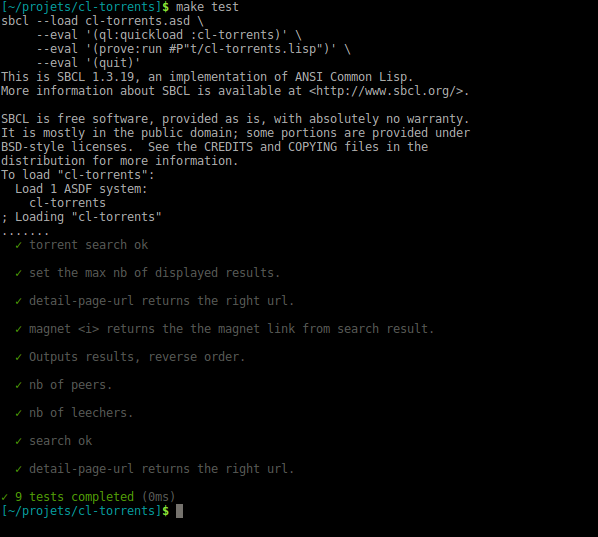
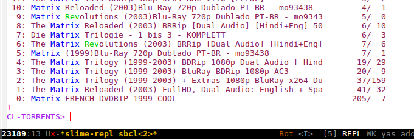

<?xml version="1.0" encoding="utf-8"?>
<!DOCTYPE html PUBLIC "-//W3C//DTD XHTML 1.0 Strict//EN"
"http://www.w3.org/TR/xhtml1/DTD/xhtml1-strict.dtd">
<html xmlns="http://www.w3.org/1999/xhtml" lang="en" xml:lang="en">
<head>
<!-- 2018-09-20 jeu. 18:39 -->
<meta http-equiv="Content-Type" content="text/html;charset=utf-8" />
<meta name="viewport" content="width=device-width, initial-scale=1" />
<title></title>
<meta name="generator" content="Org mode" />
<meta name="author" content="vindarel" />
<meta name="description" content="Scraping the Pirate Bay in Common Lisp"
 />
<meta name="keywords" content="common lisp web-scraping pirate-bay" />
<style type="text/css">
 <!--/*--><![CDATA[/*><!--*/
  .title  { text-align: center;
             margin-bottom: .2em; }
  .subtitle { text-align: center;
              font-size: medium;
              font-weight: bold;
              margin-top:0; }
  .todo   { font-family: monospace; color: red; }
  .done   { font-family: monospace; color: green; }
  .priority { font-family: monospace; color: orange; }
  .tag    { background-color: #eee; font-family: monospace;
            padding: 2px; font-size: 80%; font-weight: normal; }
  .timestamp { color: #bebebe; }
  .timestamp-kwd { color: #5f9ea0; }
  .org-right  { margin-left: auto; margin-right: 0px;  text-align: right; }
  .org-left   { margin-left: 0px;  margin-right: auto; text-align: left; }
  .org-center { margin-left: auto; margin-right: auto; text-align: center; }
  .underline { text-decoration: underline; }
  #postamble p, #preamble p { font-size: 90%; margin: .2em; }
  p.verse { margin-left: 3%; }
  pre {
    border: 1px solid #ccc;
    box-shadow: 3px 3px 3px #eee;
    padding: 8pt;
    font-family: monospace;
    overflow: auto;
    margin: 1.2em;
  }
  pre.src {
    position: relative;
    overflow: visible;
    padding-top: 1.2em;
  }
  pre.src:before {
    display: none;
    position: absolute;
    background-color: white;
    top: -10px;
    right: 10px;
    padding: 3px;
    border: 1px solid black;
  }
  pre.src:hover:before { display: inline;}
  /* Languages per Org manual */
  pre.src-asymptote:before { content: 'Asymptote'; }
  pre.src-awk:before { content: 'Awk'; }
  pre.src-C:before { content: 'C'; }
  /* pre.src-C++ doesn't work in CSS */
  pre.src-clojure:before { content: 'Clojure'; }
  pre.src-css:before { content: 'CSS'; }
  pre.src-D:before { content: 'D'; }
  pre.src-ditaa:before { content: 'ditaa'; }
  pre.src-dot:before { content: 'Graphviz'; }
  pre.src-calc:before { content: 'Emacs Calc'; }
  pre.src-emacs-lisp:before { content: 'Emacs Lisp'; }
  pre.src-fortran:before { content: 'Fortran'; }
  pre.src-gnuplot:before { content: 'gnuplot'; }
  pre.src-haskell:before { content: 'Haskell'; }
  pre.src-java:before { content: 'Java'; }
  pre.src-js:before { content: 'Javascript'; }
  pre.src-latex:before { content: 'LaTeX'; }
  pre.src-ledger:before { content: 'Ledger'; }
  pre.src-lisp:before { content: 'Lisp'; }
  pre.src-lilypond:before { content: 'Lilypond'; }
  pre.src-lua:before { content: 'Lua'; }
  pre.src-matlab:before { content: 'MATLAB'; }
  pre.src-mscgen:before { content: 'Mscgen'; }
  pre.src-ocaml:before { content: 'Objective Caml'; }
  pre.src-octave:before { content: 'Octave'; }
  pre.src-org:before { content: 'Org mode'; }
  pre.src-oz:before { content: 'OZ'; }
  pre.src-plantuml:before { content: 'Plantuml'; }
  pre.src-processing:before { content: 'Processing.js'; }
  pre.src-python:before { content: 'Python'; }
  pre.src-R:before { content: 'R'; }
  pre.src-ruby:before { content: 'Ruby'; }
  pre.src-sass:before { content: 'Sass'; }
  pre.src-scheme:before { content: 'Scheme'; }
  pre.src-screen:before { content: 'Gnu Screen'; }
  pre.src-sed:before { content: 'Sed'; }
  pre.src-sh:before { content: 'shell'; }
  pre.src-sql:before { content: 'SQL'; }
  pre.src-sqlite:before { content: 'SQLite'; }
  /* additional languages in org.el's org-babel-load-languages alist */
  pre.src-forth:before { content: 'Forth'; }
  pre.src-io:before { content: 'IO'; }
  pre.src-J:before { content: 'J'; }
  pre.src-makefile:before { content: 'Makefile'; }
  pre.src-maxima:before { content: 'Maxima'; }
  pre.src-perl:before { content: 'Perl'; }
  pre.src-picolisp:before { content: 'Pico Lisp'; }
  pre.src-scala:before { content: 'Scala'; }
  pre.src-shell:before { content: 'Shell Script'; }
  pre.src-ebnf2ps:before { content: 'ebfn2ps'; }
  /* additional language identifiers per "defun org-babel-execute"
       in ob-*.el */
  pre.src-cpp:before  { content: 'C++'; }
  pre.src-abc:before  { content: 'ABC'; }
  pre.src-coq:before  { content: 'Coq'; }
  pre.src-groovy:before  { content: 'Groovy'; }
  /* additional language identifiers from org-babel-shell-names in
     ob-shell.el: ob-shell is the only babel language using a lambda to put
     the execution function name together. */
  pre.src-bash:before  { content: 'bash'; }
  pre.src-csh:before  { content: 'csh'; }
  pre.src-ash:before  { content: 'ash'; }
  pre.src-dash:before  { content: 'dash'; }
  pre.src-ksh:before  { content: 'ksh'; }
  pre.src-mksh:before  { content: 'mksh'; }
  pre.src-posh:before  { content: 'posh'; }
  /* Additional Emacs modes also supported by the LaTeX listings package */
  pre.src-ada:before { content: 'Ada'; }
  pre.src-asm:before { content: 'Assembler'; }
  pre.src-caml:before { content: 'Caml'; }
  pre.src-delphi:before { content: 'Delphi'; }
  pre.src-html:before { content: 'HTML'; }
  pre.src-idl:before { content: 'IDL'; }
  pre.src-mercury:before { content: 'Mercury'; }
  pre.src-metapost:before { content: 'MetaPost'; }
  pre.src-modula-2:before { content: 'Modula-2'; }
  pre.src-pascal:before { content: 'Pascal'; }
  pre.src-ps:before { content: 'PostScript'; }
  pre.src-prolog:before { content: 'Prolog'; }
  pre.src-simula:before { content: 'Simula'; }
  pre.src-tcl:before { content: 'tcl'; }
  pre.src-tex:before { content: 'TeX'; }
  pre.src-plain-tex:before { content: 'Plain TeX'; }
  pre.src-verilog:before { content: 'Verilog'; }
  pre.src-vhdl:before { content: 'VHDL'; }
  pre.src-xml:before { content: 'XML'; }
  pre.src-nxml:before { content: 'XML'; }
  /* add a generic configuration mode; LaTeX export needs an additional
     (add-to-list 'org-latex-listings-langs '(conf " ")) in .emacs */
  pre.src-conf:before { content: 'Configuration File'; }

  table { border-collapse:collapse; }
  caption.t-above { caption-side: top; }
  caption.t-bottom { caption-side: bottom; }
  td, th { vertical-align:top;  }
  th.org-right  { text-align: center;  }
  th.org-left   { text-align: center;   }
  th.org-center { text-align: center; }
  td.org-right  { text-align: right;  }
  td.org-left   { text-align: left;   }
  td.org-center { text-align: center; }
  dt { font-weight: bold; }
  .footpara { display: inline; }
  .footdef  { margin-bottom: 1em; }
  .figure { padding: 1em; }
  .figure p { text-align: center; }
  .inlinetask {
    padding: 10px;
    border: 2px solid gray;
    margin: 10px;
    background: #ffffcc;
  }
  #org-div-home-and-up
   { text-align: right; font-size: 70%; white-space: nowrap; }
  textarea { overflow-x: auto; }
  .linenr { font-size: smaller }
  .code-highlighted { background-color: #ffff00; }
  .org-info-js_info-navigation { border-style: none; }
  #org-info-js_console-label
    { font-size: 10px; font-weight: bold; white-space: nowrap; }
  .org-info-js_search-highlight
    { background-color: #ffff00; color: #000000; font-weight: bold; }
  .org-svg { width: 90%; }
  /*]]>*/-->
</style>
<link rel="stylesheet" type="text/css" href="https://www.pirilampo.org/styles/readtheorg/css/htmlize.css"/>
<link rel="stylesheet" type="text/css" href="https://www.pirilampo.org/styles/readtheorg/css/readtheorg.css"/>
<script src="https://ajax.googleapis.com/ajax/libs/jquery/2.1.3/jquery.min.js"></script>
<script src="https://maxcdn.bootstrapcdn.com/bootstrap/3.3.4/js/bootstrap.min.js"></script>
<script type="text/javascript" src="https://www.pirilampo.org/styles/lib/js/jquery.stickytableheaders.min.js"></script>
<script type="text/javascript" src="https://www.pirilampo.org/styles/readtheorg/js/readtheorg.js"></script>
<script type="text/javascript">
/*
@licstart  The following is the entire license notice for the
JavaScript code in this tag.

Copyright (C) 2012-2013 Free Software Foundation, Inc.

The JavaScript code in this tag is free software: you can
redistribute it and/or modify it under the terms of the GNU
General Public License (GNU GPL) as published by the Free Software
Foundation, either version 3 of the License, or (at your option)
any later version.  The code is distributed WITHOUT ANY WARRANTY;
without even the implied warranty of MERCHANTABILITY or FITNESS
FOR A PARTICULAR PURPOSE.  See the GNU GPL for more details.

As additional permission under GNU GPL version 3 section 7, you
may distribute non-source (e.g., minimized or compacted) forms of
that code without the copy of the GNU GPL normally required by
section 4, provided you include this license notice and a URL
through which recipients can access the Corresponding Source.


@licend  The above is the entire license notice
for the JavaScript code in this tag.
*/
<!--/*--><![CDATA[/*><!--*/
 function CodeHighlightOn(elem, id)
 {
   var target = document.getElementById(id);
   if(null != target) {
     elem.cacheClassElem = elem.className;
     elem.cacheClassTarget = target.className;
     target.className = "code-highlighted";
     elem.className   = "code-highlighted";
   }
 }
 function CodeHighlightOff(elem, id)
 {
   var target = document.getElementById(id);
   if(elem.cacheClassElem)
     elem.className = elem.cacheClassElem;
   if(elem.cacheClassTarget)
     target.className = elem.cacheClassTarget;
 }
/*]]>*///-->
</script>
</head>
<body>
<div id="content">
<div id="table-of-contents">
<h2>Table of Contents</h2>
<div id="text-table-of-contents">
<ul>
<li><a href="#org98cc478">1. Make it work</a>
<ul>
<li><a href="#orgce59174">1.1. Trying out at the REPL</a></li>
<li><a href="#orgb1aa808">1.2. Putting it together in a function</a></li>
<li><a href="#orga25f7c0">1.3. Creating a new project</a></li>
<li><a href="#org9a232fd">1.4. Adding our dependencies</a></li>
<li><a href="#org8854503">1.5. Loading the project</a></li>
<li><a href="#orgf9910b3">1.6. Searching with our keywords</a></li>
<li><a href="#org5424ac7">1.7. Formatting output</a></li>
<li><a href="#org5fd390e">1.8. Getting more torrent information</a>
<ul>
<li><a href="#org08402ba">1.8.1. To the magnet link</a></li>
</ul>
</li>
<li><a href="#orgb398068">1.9. Exporting functions</a></li>
<li><a href="#org45042c4">1.10. Conclusion</a></li>
</ul>
</li>
<li><a href="#org8fddc4b">2. Designing the scrapers with CLOS</a></li>
<li><a href="#orgb334267">3. Tests and CI</a>
<ul>
<li><a href="#org2c5ed08">3.1. Unit tests</a></li>
<li><a href="#orgdbf896f">3.2. Capturing output</a></li>
<li><a href="#org7cff399">3.3. Isolating tests (with a macro)</a></li>
<li><a href="#orgdd0e901">3.4. make test</a></li>
<li><a href="#orgb767c99">3.5. Continuous Integration</a></li>
<li><a href="#org0ea9172">3.6. A couple Docker commands</a></li>
</ul>
</li>
<li><a href="#orgac6dcee">4. Building and delivering self-contained executables</a>
<ul>
<li><a href="#org128fa14">4.1. SBCL.</a></li>
<li><a href="#org2419f3a">4.2. make build</a></li>
<li><a href="#org2fe1b7f">4.3. with ASDF or Roswell</a></li>
<li><a href="#orgc210852">4.4. Size and startup times of executables per implementation</a></li>
<li><a href="#orgc6c34e3">4.5. Parsing command line arguments</a></li>
<li><a href="#org9d95fe0">4.6. Automatically building and delivering the executable</a></li>
<li><a href="#org91c3b4f">4.7. Final words</a></li>
</ul>
</li>
<li><a href="#org085ee37">5. Moving functions into their own package</a>
<ul>
<li><a href="#orgf125f44">5.1. Dealing with symbol conflicts. shadowing-import, uninterning.</a></li>
<li><a href="#orga274e53">5.2. The helper functions. Ansi colors. Closures. Looping over a plist.</a></li>
<li><a href="#org2d22d57">5.3. Formatting a format string</a></li>
</ul>
</li>
<li><a href="#orgfd0ef44">6. Error handling</a>
<ul>
<li><a href="#org57068df">6.1. Dealing with malformed command line arguments</a></li>
<li><a href="#orga725dda">6.2. Catching a user's C-c termination signal</a></li>
<li><a href="#org25a35b5">6.3. Scrapers errors</a></li>
</ul>
</li>
<li><a href="#orga32bdb3">7. More features</a>
<ul>
<li><a href="#org05a78a1">7.1. Cache</a></li>
</ul>
</li>
<li><a href="#org57a82c0">8. Conclusion</a></li>
<li><a href="#orgd48136a">9. Appendice A: the same, with CL21</a>
<ul>
<li><a href="#org655303a">9.1. Installation</a></li>
<li><a href="#org6d74e8a">9.2. Replacing CL by CL21</a></li>
<li><a href="#orgf5563d4">9.3. Benefits ?</a></li>
<li><a href="#org697da55">9.4. Downsides ?</a></li>
</ul>
</li>
</ul>
</div>
</div>
<p>
Writing a little web scraper is not difficult. However, I had to spend
some time  to find out the  right libraries and resources.  It is also
not trivial at  first to start a  Lisp project, so
</p>

<blockquote>
<p>
this  tutorial  is a  mix  of  hopefully  useful stuff,  for  people
interested  in Common  Lisp  and  with not  much  experience with  the
language and its ecosystem.
</p>
</blockquote>

<p>
In part  1, "Make  it work",  we explore how  to do  <b>asynchronous web
scraping</b>.   We try  things out  at  the repl  and we  create a  first
package. We  learn basic  <b>data structures</b> and  their gotchas  in the
way, we  also see where  to find documentation, some  useful libraries
and beginner-friendly tips.
</p>

<p>
Part 2 is a short introduction to the CL Object System (<b>CLOS</b>), which
is much  more a  pleasure to  work with than  dealing with  alists and
other data structures.
</p>

<p>
In part 3, "<b>Tests  and CI</b>", we write our first  unit test, with mocks,
which gives  us the opportunity to  write a first macro,  and we setup
Continuous Integration on Gitlab CI.
</p>

<p>
Part 4 is about  <b>building and delivering self-contained executables</b>,
<b>parsing command line arguments</b> and  such. While it was necessary for
us at the time to gather this  information, it is now available in the
<a href="https://lispcookbook.github.io/cl-cookbook/scripting.html">Common Lisp  Cookbook</a> and is probably  more up to date.  We advise the
reader to go there.
</p>

<p>
Part 5, "Moving functions into  their own package", shows and explains
things that appear strange at  first, like "shadowing import", symbols
conflicts and such.  We also write  helper functions and make good use
of closures.
</p>

<p>
Part 6  is about  <b>error handling</b> or  rather condition  handling.
</p>

<p>
Part 7, "More features", shows only a cache system at the moment.
</p>

<p>
Finally, we have a look at <a href="http://cl21.org/">CL21</a>.
</p>


<div id="outline-container-org98cc478" class="outline-2">
<h2 id="org98cc478"><span class="section-number-2">1</span> Make it work</h2>
<div class="outline-text-2" id="text-1">
<p>
Scraping   The   Pirate   Bay   is    easy,   they   don't   rely   on
javascript-generated pages. We just have to:
</p>

<ul class="org-ul">
<li>get the html page (<a href="http://quickdocs.org/dexador/">dexador</a>: <code>(dex:get &lt;url&gt;)</code>)</li>
<li>parse the html into a data structure (<a href="https://shinmera.github.io/plump/">plump</a>: <code>(plump:parse &lt;html&gt;)</code>)</li>
<li>search   with  CSS   selectors  (<a href="https://shinmera.github.io/lquery">lquery</a>:   <code>(lquery:$  &lt;parsed-html&gt;
  &lt;selectors&gt;)</code>)</li>
</ul>

<p>
We suppose  you have a  ready Common Lisp development  environment. If
not, see the <a href="https://lispcookbook.github.io/cl-cookbook/getting-started.html">Cookbook/getting-started</a> (and  if that's not enough, fill
an issue !).
</p>

<p>
Let's go.
</p>

<p>
Install our dependencies right away:
</p>

<div class="org-src-container">
<pre class="src src-lisp">(ql:quickload '(<span style="color: #8b2252;">"dexador"</span> <span style="color: #8b2252;">"plump"</span> <span style="color: #8b2252;">"lquery"</span> <span style="color: #8b2252;">"str"</span>))
</pre>
</div>

<p>
To begin  with, we do  a search on the  website and we  copy-paste the
url. We get one like this:
</p>

<div class="org-src-container">
<pre class="src src-lisp">(<span style="color: #a020f0;">defparameter</span> <span style="color: #a0522d;">*search-url*</span> <span style="color: #8b2252;">"https://piratebay.to/search/?FilterStr=matrix&amp;ID=&amp;Limit=800&amp;Letter=&amp;Sorting=DSeeder"</span>
    <span style="color: #8b2252;">"the url to search matrix."</span>)
</pre>
</div>

<p>
It has our search term in it (<code>matrix</code>) along with url parameters.
</p>

<p>
It also sorts the results by number of seeders for us :) (<code>&amp;Sorting=DSeeder</code>).
</p>

<p>
We will use CSS selectors to extract information from the web page, so
we can use  our browser's developer tools to inspect  the structure of
the page  and guess our  selectors: right  click on a  result's title,
choose "inspect element". It highlights some html similar to this:
</p>

<div class="org-src-container">
<pre class="src src-html">&lt;<span style="color: #0000ff;">td</span> <span style="color: #a0522d;">class</span>=<span style="color: #8b2252;">"Title"</span>&gt;
  &lt;<span style="color: #0000ff;">span</span> <span style="color: #a0522d;">class</span>=<span style="color: #8b2252;">"ColorA"</span>&gt;
    &lt;<span style="color: #0000ff;">a</span> <span style="color: #a0522d;">href</span>=<span style="color: #8b2252;">"https://piratebay.to/torrent/1922147/Matrix (1999)Blu-Ray 720p Dublado PT-BR - mo93438/"</span> <span style="color: #a0522d;">onclick</span>=<span style="color: #8b2252;">"Javascript:OpenDetailPage('https://piratebay.to/torrent/1922147/Matrix (1999)Blu-Ray 720p Dublado PT-BR - mo93438/'); return false;"</span>&gt;Matrix (1999)Blu-Ray 720p Dublado PT-BR - mo93438 &lt;/<span style="color: #0000ff;">a</span>&gt;
  &lt;/<span style="color: #0000ff;">span</span>&gt;
  &lt;<span style="color: #0000ff;">br</span>&gt;
    &lt;<span style="color: #0000ff;">span</span> <span style="color: #a0522d;">class</span>=<span style="color: #8b2252;">"ColorB VaA"</span>&gt;Upload Date: 20.02.15 &lt;/<span style="color: #0000ff;">span</span>&gt;
    &lt;<span style="color: #0000ff;">span</span> <span style="color: #a0522d;">class</span>=<span style="color: #8b2252;">"ColorB VaA"</span>&gt;Size: 796,86 MB &lt;/<span style="color: #0000ff;">span</span>&gt;
    &lt;<span style="color: #0000ff;">span</span> <span style="color: #a0522d;">class</span>=<span style="color: #8b2252;">"ColorB"</span>&gt; &lt;/<span style="color: #0000ff;">span</span>&gt;
&lt;/<span style="color: #0000ff;">td</span>&gt;
</pre>
</div>


<p>
The title is  well delimited so we'll start selecting  our elements by
the CSS class <code>Title</code>, which gives:
</p>

<div class="org-src-container">
<pre class="src src-lisp">(<span style="color: #a020f0;">defparameter</span> <span style="color: #a0522d;">*selectors*</span> <span style="color: #8b2252;">".Title"</span>)
</pre>
</div>

<p>
If  you are  not accostumed  to  CSS selectors,  this post  is a  nice
helper:
<a href="https://codingsec.net/2016/12/select-specific-text-css-using-selectors/">https://codingsec.net/2016/12/select-specific-text-css-using-selectors/</a>.
</p>
</div>

<div id="outline-container-orgce59174" class="outline-3">
<h3 id="orgce59174"><span class="section-number-3">1.1</span> Trying out at the REPL</h3>
<div class="outline-text-3" id="text-1-1">
<p>
Let's try in the REPL:
</p>

<div class="org-src-container">
<pre class="src src-lisp">(<span style="color: #a020f0;">defparameter</span> <span style="color: #a0522d;">html</span> (dex:get *search-url*)) <span style="color: #b22222;">;; </span><span style="color: #b22222;">returns the html</span>
(<span style="color: #a020f0;">defparameter</span> <span style="color: #a0522d;">parsed</span> (plump:parse html))   <span style="color: #b22222;">;; </span><span style="color: #b22222;">returns a list of plump elements</span>
(<span style="color: #a020f0;">defparameter</span> <span style="color: #a0522d;">results</span> (lquery:$ parsed *selectors*)) <span style="color: #b22222;">;; </span><span style="color: #b22222;">returns a list of stuff</span>
(setf results (lquery:$ parsed *selectors*))
</pre>
</div>

<p>
it returns:
</p>

<div class="org-src-container">
<pre class="src src-text">#(#&lt;PLUMP-DOM:ELEMENT th {100369D943}&gt; #&lt;PLUMP-DOM:ELEMENT td {10036A7CE3}&gt;
  #&lt;PLUMP-DOM:ELEMENT td {10036B6163}&gt; #&lt;PLUMP-DOM:ELEMENT td {10036FC903}&gt;
  ...
  #&lt;PLUMP-DOM:ELEMENT td {10047C0BC3}&gt; #&lt;PLUMP-DOM:ELEMENT th {10047D44E3}&gt;
  #&lt;PLUMP-DOM:ELEMENT td {10047DE853}&gt; #&lt;PLUMP-DOM:ELEMENT th {10047F2333}&gt;
  #&lt;PLUMP-DOM:ELEMENT td {10047FC673}&gt; #&lt;PLUMP-DOM:ELEMENT td {100480ACF3}&gt;
  #&lt;PLUMP-DOM:ELEMENT td {10048195D3}&gt; #&lt;PLUMP-DOM:ELEMENT td {1004827D73}&gt;)
</pre>
</div>

<p>
We can check its inner text representation:
</p>

<div class="org-src-container">
<pre class="src src-lisp">(lquery:$ parsed *selectors* (text))
<span style="color: #b22222;">;; </span><span style="color: #b22222;">=&gt;</span>
#(<span style="color: #8b2252;">"</span>
<span style="color: #8b2252;">Title</span>
<span style="color: #8b2252;">"</span>
  <span style="color: #8b2252;">"Matrix FRENCH DVDRIP 1999 COOLUpload Date: 05.06.15 Size: 700,30 MB"</span>
  <span style="color: #8b2252;">"The Matrix Reloaded (2003) FullHD, Dual Audio: English + SpaUpload Date: 12.04.15 Size: 8,51 GB"</span>
[...]
<span style="color: #8b2252;">"</span>
<span style="color: #8b2252;">  "</span>Arturia - Matrix 12-V v1.0.1.9 OS X [HEXWARS][dada]Upload Date: 28.12.14 Size: 100,86 MB<span style="color: #8b2252;">"</span>
<span style="color: #8b2252;">  "</span>Native Instruments - Maschine Expansion Golden Kingdom HYBRIUpload Date: 03.06.15 Size: 267,84 MB<span style="color: #8b2252;">"</span>
<span style="color: #8b2252;">  "</span>Arturia - Matrix-12 V v1 1 0 522 R2 AU AAX VST VST3 ST OS X Upload Date: 02.04.15 Size: 100,49 MB<span style="color: #8b2252;">"</span>
<span style="color: #8b2252;">  "</span>Arturia - Matrix-12 V v1.1.0.522 OS X [PitcHsHiFTeR][dada]Upload Date: 28.03.15 Size: 130,44 MB<span style="color: #8b2252;">")</span>
</pre>
</div>

<p>
A little explanation for <code>lquery</code>: the last <code>(text)</code> part is
an lquery thing to get the text representation of the node, instead of
a  lquery internal  object.  Likewise  we'll be  able  to call  <code>(attr
:href)</code>  or  <code>(html)</code>, which  are  self-explanatory.  If you  want  CL
symbols there, use <code>(inline (...))</code>.
</p>

<p>
I  like to  check the  html content  of the  plump nodes.  We use  the
<code>serialize</code> plump function (the second function from the doc ;) ):
</p>

<div class="org-src-container">
<pre class="src src-lisp">(plump:serialize (first results))
</pre>
</div>

<p>
but we get an error:
</p>

<blockquote>
<p>
The value #(
&#x2026; all the content of results here &#x2026;
)
is not of type LIST
when binding LIST
…
</p>
</blockquote>

<p>
Sorry for  the inconvenience. Indeed, lquery  returns a vector,
not a list (we  can see that with <code>#()</code> that denotes  a vector), so we
can not use <code>first</code> but have to use <code>(aref &lt;vector&gt; 0)</code> instead, or we
have to <code>coerce</code> the result to a list.
</p>

<p>
(see the <a href="https://lispcookbook.github.io/cl-cookbook/data-structures.html">Cookbook's Data Structures page</a>).
</p>

<p>
Personnally I find this frustrating, particularly being used in Python
to access  lots of data  structures in the  same manner.  If  you feel
like  fixing this,  have a  look at  <a href="https://lispcookbook.github.io/cl-cookbook/cl21.html">CL21</a>, "Common  Lisp for  the 21st
century" which,  amongst other  features, redefines some  functions to
make them generic (that work on lists, vectors, hashmaps,…). CL21 is a
CL library, meaning we can of  course use the others CL libraries with
it, or that  we can use cl21  alongside CL in only in  some places but
not in all our project (like in only one file, one "package").
</p>

<p>
It is written  by a super productive and innovative  CL hacker and has
600+ stars  on github.  Nevertheless,  it wasn't touched in  two years
and, as it lacks docstrings and  direction, we can be surprised by the
new implementation  of some  functions (see  its issues).  Some people
discourage the use of it.  I, at least, am a happy user for the moment
:)
</p>

<p>
Allright so, back to printing the html content of our first result:
</p>

<div class="org-src-container">
<pre class="src src-text">(plump:serialize (aref results 0))
&lt;th class="Title header "&gt;
&lt;a href="https://piratebay.to/search/0/800/0/matrix/0/ATitle/1/"&gt;Title&lt;/a&gt;
&lt;/th&gt;
"&gt;"
</pre>
</div>

<p>
gosh, there  is not much in  it.  I was  too quick in defining  my CSS
selector.  This  first result should  not be catched by  our selector,
because it is not a link to a torrent but only the header of the table
(see "Title header" and the <code>th</code> ?).
</p>

<p>
But that's not  all. I also want  to scrape the number  of seeders and
leechers and  the <code>.Title</code> selector  doesn't include them  (this I see
with the browser's web inspector). If I select the including <code>tr</code> I'll
get all the data,  and I must ensure to select  those <code>tr</code> from inside
the body  of the table,  <code>tbody</code>.  So I'll  use a first  selector that
will return a list of elements of the table:
</p>

<div class="org-src-container">
<pre class="src src-lisp">(setf *selectors* <span style="color: #8b2252;">"tbody tr"</span>)
</pre>
</div>

<p>
and then for each result I'll get the title and the number of seeders.
</p>

<p>
So I can scrape again my search results with the new selector:
</p>

<div class="org-src-container">
<pre class="src src-lisp">(setf results (lquery:$ parsed *selectors* (text)))
</pre>
</div>

<p>
this should print interesting stuff, like our torrents titles and even
strings like <code>S: 16L: 1</code> which are indeed our seeders and leechers.
</p>

<p>
I check the html content and it seems allright. It has the link to the
torrent's page  inside the  href of  the "a" element,  as well  as the
seeders count.
</p>

<p>
Note that we  can also inspect the results with  the mouse: left/right
clicks  on the  elements printed  in the  REPL get  us into  the Slime
inspector.
</p>
</div>
</div>

<div id="outline-container-orgb1aa808" class="outline-3">
<h3 id="orgb1aa808"><span class="section-number-3">1.2</span> Putting it together in a function</h3>
<div class="outline-text-3" id="text-1-2">
<p>
We came up with this function:
</p>

<div class="org-src-container">
<pre class="src src-lisp">(<span style="color: #a020f0;">defun</span> <span style="color: #0000ff;">torrents</span> (words)
  <span style="color: #8b2252;">""</span>
  (<span style="color: #a020f0;">let*</span> ((html (dex:get *search-url*))
         (parsed (plump:parse html))
         (res (lquery:$ parsed *selectors*)))
    res))
</pre>
</div>

<p>
and if  you prefer a  threading macro /  pipes, no problem,  but we'll
load another external library:
</p>

<div class="org-src-container">
<pre class="src src-lisp">(ql:quickload <span style="color: #8b2252;">"arrow-macros"</span>)
<span style="color: #b22222;">;; </span><span style="color: #b22222;">and we import its symbols:</span>
(use-package <span style="color: #8b2252;">"arrow-macros"</span>)
</pre>
</div>

<div class="org-src-container">
<pre class="src src-lisp">(-&lt;&gt;&gt; *search-url*
  (dex:get)
  (plump:parse)
  (lquery:$ &lt;&gt; *selectors*))
</pre>
</div>

<p>
<a href="https://github.com/hipeta/arrow-macros">arrow-macros</a> defines  a few  threading macros. The  classic one  would be
<code>-&gt;</code>,  which inserts  the  result  of the  preceding  form as  <span class="underline">first</span>
argument, <code>-&gt;&gt;</code> that  puts it <span class="underline">last</span>, which is what  we wanted for the
two  forms but  not for  the last  one, with  lquery, which  needs the
parsed  html as  first argument.   So we  use <code>-&lt;&gt;&gt;</code>:  the arrow  will
populate  the  <span class="underline">last</span>  argument,  except when  it  encounters  a  <code>&lt;&gt;</code>
placeholder. <code>-&lt;&gt;&gt;</code> has a little name, "Diamond Spear".
</p>
</div>
</div>

<div id="outline-container-orga25f7c0" class="outline-3">
<h3 id="orga25f7c0"><span class="section-number-3">1.3</span> Creating a new project</h3>
<div class="outline-text-3" id="text-1-3">
<p>
Before we write more functions we  should create a new project. For
this  I  use a  skeleton  generator  which  will create  the  right
<code>defsystem</code>, <code>defpackage</code> and so for us.
</p>

<p>
I use  <code>cl-project</code>, which  also generates a  tests skeleton  (in the
contrary of <code>quick-project</code>):
</p>

<div class="org-src-container">
<pre class="src src-lisp">(ql:quickload <span style="color: #8b2252;">"cl-project"</span>)
(cl-project:make-project #P<span style="color: #8b2252;">"~/path/to/cl-torrents/"</span>)
</pre>
</div>

<p>
Note that it  may be easier for  you sometimes if you  create your new
Common  Lisp  projects  into <code>~/.quicklisp/local-projects</code>  (known  by
Quicklisp)  or <code>~/.local/share/common-lisp/</code>  (known by  ASDF). Doing
so, you will be able to <code>ql:quickload</code> your project right away.
</p>
</div>
</div>

<div id="outline-container-org9a232fd" class="outline-3">
<h3 id="org9a232fd"><span class="section-number-3">1.4</span> Adding our dependencies</h3>
<div class="outline-text-3" id="text-1-4">
<p>
Our new <code>cl-torrents.asd</code> looks like this:
</p>

<div class="org-src-container">
<pre class="src src-lisp"><span style="color: #b22222;">#|</span>
<span style="color: #b22222;">  This file is a part of cl-torrents project.</span>
<span style="color: #b22222;">|#</span>

(<span style="color: #a020f0;">in-package</span> <span style="color: #483d8b;">:cl-user</span>)
(<span style="color: #a020f0;">defpackage</span> <span style="color: #228b22;">cl-torrents-asd</span>
  (<span style="color: #483d8b;">:use</span> <span style="color: #483d8b;">:cl</span> <span style="color: #483d8b;">:asdf</span>))
(<span style="color: #a020f0;">in-package</span> <span style="color: #483d8b;">:cl-torrents-asd</span>)

(defsystem cl-torrents
  <span style="color: #483d8b;">:version</span> <span style="color: #8b2252;">"0.1"</span>
  <span style="color: #483d8b;">:author</span> <span style="color: #8b2252;">""</span>
  <span style="color: #483d8b;">:license</span> <span style="color: #8b2252;">""</span>
  <span style="color: #483d8b;">:depends-on</span> ()  <span style="color: #b22222;">;; </span><span style="color: #b22222;">&lt;== list of dependencies</span>
  <span style="color: #483d8b;">:components</span> ((<span style="color: #483d8b;">:module</span> <span style="color: #8b2252;">"src"</span>
                <span style="color: #483d8b;">:components</span>
                ((<span style="color: #483d8b;">:file</span> <span style="color: #8b2252;">"cl-torrents"</span>))))
  <span style="color: #483d8b;">:description</span> <span style="color: #8b2252;">""</span>
  <span style="color: #483d8b;">:long-description</span>
  &#8230;)
</pre>
</div>

<p>
For pythonistas, it is very similar to a <code>setup.py</code>.
</p>

<p>
It  has the  <code>depends-on</code> paramater  which accepts  a list  of package
names. We have to register here <code>dexador</code> and the others:
</p>

<div class="org-src-container">
<pre class="src src-lisp"><span style="color: #483d8b;">:depends-on</span> (<span style="color: #483d8b;">:str</span>
             <span style="color: #483d8b;">:dexador</span>
             <span style="color: #483d8b;">:plump</span>
             <span style="color: #483d8b;">:lquery</span>)
</pre>
</div>

<p>
and <code>arrow-macros</code> if you wish.
</p>

<p>
If you <i>need</i> to set package versions, use something like:
</p>

<div class="org-src-container">
<pre class="src src-lisp"><span style="color: #483d8b;">:depends-on</span> ((<span style="color: #483d8b;">:version</span> <span style="color: #8b2252;">"cl-ppcre"</span> <span style="color: #8b2252;">"2.0.11"</span>))
</pre>
</div>

<p>
but  there is  usually  no  need.  To  learn  more about  dependencies
management  in Common  Lisp, what  to do  when you  need project-local
dependencies (like a virtual env), see the <a href="https://lispcookbook.github.io/cl-cookbook/getting-started.html#advanced-dependencies-management">Cookbook</a>.
</p>
</div>
</div>

<div id="outline-container-org8854503" class="outline-3">
<h3 id="org8854503"><span class="section-number-3">1.5</span> Loading the project</h3>
<div class="outline-text-3" id="text-1-5">
<p>
Open the  <code>.asdf</code> file and  compile and load  it. In Slime,  it's with
<code>C-c C-k</code> (<code>slime-compile-and-load-file</code>, see also the Emacs menu).
</p>

<p>
Now we can load the project at the REPL and install its dependencies:
</p>

<div class="org-src-container">
<pre class="src src-lisp">(ql:quickload <span style="color: #8b2252;">"cl-torrents"</span> <span style="color: #b22222;">;; </span><span style="color: #b22222;">or asdf:make</span>
<span style="color: #b22222;">; </span><span style="color: #b22222;">compiling file "/home/vince/projets/cl-torrents/src/cl-torrents.lisp" (written 28 AUG 2017 10:21:07 PM):</span>
<span style="color: #b22222;">; </span><span style="color: #b22222;">compiling (IN-PACKAGE :CL-USER)</span>
<span style="color: #b22222;">; </span><span style="color: #b22222;">compiling (DEFPACKAGE CL-TORRENTS ...)</span>
<span style="color: #b22222;">; </span><span style="color: #b22222;">compiling (IN-PACKAGE :CL-TORRENTS)</span>
<span style="color: #b22222;">; </span><span style="color: #b22222;">compiling (DEFPARAMETER *SEARCH-URL* ...)</span>
<span style="color: #b22222;">; </span><span style="color: #b22222;">compiling (DEFPARAMETER *SELECTORS* ...)</span>
<span style="color: #b22222;">; </span><span style="color: #b22222;">compiling (DEFUN TORRENTS ...)</span>

<span style="color: #b22222;">; </span><span style="color: #b22222;">/home/vince/.cache/common-lisp/sbcl-1.3.19-linux-x64/home/vince/projets/cl-torrents/src/cl-torrents-tmp5GEXGEG5.fasl written</span>
<span style="color: #b22222;">; </span><span style="color: #b22222;">compilation finished in 0:00:00.029</span>
<span style="color: #b22222;">; </span><span style="color: #b22222;">compilation unit finished</span>
T
</pre>
</div>

<p>
And now we can use our function at the REPL.
</p>

<p>
We go into our package so that we can call our functions directly:
</p>

<div class="org-src-container">
<pre class="src src-lisp">(<span style="color: #a020f0;">in-package</span> <span style="color: #483d8b;">:cl-torrents</span>)
</pre>
</div>

<p>
We could import the functions from our package and call them directly,
but we need to <code>export</code> them and we'll see that shortly.
</p>

<p>
We could  call them  with the  project prefix, but  we need  a doublon
colon because  our functions  are not exported  yet (so  they're kinda
private,  but not  strictly,  like  with a  method  starting with  the
underscore <code>_</code> in Python).
</p>

<div class="org-src-container">
<pre class="src src-lisp">(cl-torrents::torrents <span style="color: #8b2252;">"matrix"</span>)
</pre>
</div>
</div>
</div>

<div id="outline-container-orgf9910b3" class="outline-3">
<h3 id="orgf9910b3"><span class="section-number-3">1.6</span> Searching with our keywords</h3>
<div class="outline-text-3" id="text-1-6">
<p>
Until now  we only tried  things out with a  given search url,  set in
stone. It's time to insert our own search terms into this search url.
</p>

<p>
We'll put a <code>{KEYWORDS}</code> placeholder into the url:
</p>

<div class="org-src-container">
<pre class="src src-lisp">(<span style="color: #a020f0;">defparameter</span> <span style="color: #a0522d;">*search-url*</span> <span style="color: #8b2252;">"https://piratebay.to/search/?FilterStr={KEYWORDS}&amp;ID=&amp;Limit=800&amp;Letter=&amp;Sorting=DSeeder"</span>
    <span style="color: #8b2252;">"base search url. {KEYWORDS} to be replaced by + separated words."</span>)
</pre>
</div>

<p>
which we will replace with a <code>+</code>-separated list of keywords.
</p>

<p>
With a little  look at the <a href="https://lispcookbook.github.io/cl-cookbook/strings.html">"strings" cookbook page</a>,  we'll go with the
little <a href="https://github.com/vindarel/cl-str">str</a> library (our lib actually):
</p>

<div class="org-src-container">
<pre class="src src-lisp">(ql:quickload <span style="color: #8b2252;">"str"</span>)
</pre>
</div>

<p>
Let's try:
</p>

<div class="org-src-container">
<pre class="src src-lisp">(<span style="color: #a020f0;">defparameter</span> <span style="color: #a0522d;">words</span> <span style="color: #8b2252;">"matrix trilogy"</span>)
<span style="color: #b22222;">;; </span><span style="color: #b22222;">=&gt; WORDS</span>
(str:words words)
<span style="color: #b22222;">;; </span><span style="color: #b22222;">=&gt; ("matrix" "trilogy")</span>
(str:join <span style="color: #8b2252;">"+"</span> *) <span style="color: #b22222;">;; </span><span style="color: #b22222;">the * is a REPL shortcut to insert the previous result. + inserts the previous input.</span>
<span style="color: #b22222;">;; </span><span style="color: #b22222;">=&gt; "matrix+trilogy"</span>
</pre>
</div>

<p>
and voilà. We put this at the beginning of our search function and we get:
</p>

<div class="org-src-container">
<pre class="src src-lisp">(<span style="color: #a020f0;">defparameter</span> <span style="color: #a0522d;">*search-url*</span> <span style="color: #8b2252;">"https://piratebay.to/search/?FilterStr={KEYWORDS}&amp;ID=&amp;Limit=800&amp;Letter=&amp;Sorting=DSeeder"</span> <span style="color: #8b2252;">"base search url. KEYWORDS to be replaced."</span>)

(<span style="color: #a020f0;">defun</span> <span style="color: #0000ff;">torrents</span> (words)
  <span style="color: #8b2252;">"Search torrents."</span>
  (<span style="color: #a020f0;">let*</span> ((terms (str:words words))
         (query (str:join <span style="color: #8b2252;">"+"</span> terms))
         (*search-url* (str:replace-all <span style="color: #8b2252;">"{KEYWORDS}"</span> query *search-url*))
         (req (dex:get *search-url*))
         (html (plump:parse req))
         (res (lquery:$ html *selectors*))
         (res-list (coerce res 'list))))

    res-list))
</pre>
</div>

<p>
In the end we prefer to return a list, rather than a vector.
</p>

<p>
Let's try:
</p>

<div class="org-src-container">
<pre class="src src-lisp">(torrents <span style="color: #8b2252;">"matrix trilogy"</span>)
(<span style="color: #8b2252;">"Matrix FRENCH DVDRIP 1999 COOLUpload Date: 05.06.15 Size: 700,30 MB"</span>
  <span style="color: #8b2252;">"The Matrix Reloaded (2003) FullHD, Dual Audio: English + SpaUpload Date: 12.04.15 Size: 8,51 GB"</span>
  <span style="color: #8b2252;">"The Matrix Trilogy (1999-2003) + Extras 1080p BluRay x264 DuUpload Date: 12.02.15 Size: 12,86 GB"</span>
  <span style="color: #8b2252;">"The Matrix Trilogy (1999-2003) BluRay BDRip 1080p AC3Upload Date: 15.09.15 Size: 23,29 GB"</span>
  <span style="color: #8b2252;">"The Matrix Trilogy (1999-2003) BDRip 1080p Dual Audio [ HindUpload Date: 14.01.15 Size: 10,23 GB"</span>
  <span style="color: #8b2252;">"The Matrix Revolutions (2003) BRRip [Dual Audio] [Hindi+Eng]Upload Date: 24.02.15 Size: 496,36 MB"</span>
  <span style="color: #8b2252;">"Matrix (1999)Blu-Ray 720p Dublado PT-BR - mo93438Upload Date: 20.02.15 Size: 796,86 MB"</span>
  <span style="color: #8b2252;">"The Matrix Reloaded (2003) BRRip [Dual Audio] [Hindi+Eng] 50Upload Date: 22.02.15 Size: 496,39 MB"</span>
  [and more results]
</pre>
</div>

<p>
Cool !
</p>

<p>
We can commit  this, have a break  and enjoy how things  are going. It
was very easy, except one or two gotchas :)
</p>

<p>
Of course, we need  to get more stuff out of  this, like the torrent's
magnet link.
</p>
</div>
</div>

<div id="outline-container-org5424ac7" class="outline-3">
<h3 id="org5424ac7"><span class="section-number-3">1.7</span> Formatting output</h3>
<div class="outline-text-3" id="text-1-7">
<p>
Our  <code>torrents</code> function  prints  out intelligable  output, but  we
don't control  it yet. We want  to iterate over the  search results
and print exactly what we want.
</p>

<p>
So first  we need to  extract the title,  with the CSS  selector we
found at the beginning.
</p>

<div class="org-src-container">
<pre class="src src-lisp">(<span style="color: #a020f0;">defun</span> <span style="color: #0000ff;">result-title</span> (node)
  <span style="color: #8b2252;">"Return the title of a search result."</span>
  (aref
   (lquery:$ node <span style="color: #8b2252;">".Title a"</span> (text))
   0))
</pre>
</div>

<p>
When we iterate over the result list:
</p>

<div class="org-src-container">
<pre class="src src-lisp">(<span style="color: #a020f0;">defun</span> <span style="color: #0000ff;">display-results</span> (<span style="color: #228b22;">&amp;optional</span> (results *last-search*) (stream t))
  <span style="color: #8b2252;">"Results: list of plump nodes. We want to print a numbered list with the needed information (torrent title, the number of seeders,..."</span>
  (mapcar (<span style="color: #a020f0;">lambda</span> (it)
            <span style="color: #b22222;">;; </span><span style="color: #b22222;">do not rely on *last-search*.</span>
            (format stream <span style="color: #8b2252;">"~a~%"</span> (result-title it)))
          results)
  t)
</pre>
</div>

<p>
it prints something like:
</p>

<div class="org-src-container">
<pre class="src src-text">Matrix FRENCH DVDRIP 1999 COOL
The Matrix Reloaded (2003) FullHD, Dual Audio: English + Spa
The Matrix Trilogy (1999-2003) + Extras 1080p BluRay x264 Du
The Matrix Trilogy (1999-2003) BluRay BDRip 1080p AC3
The Matrix Trilogy (1999-2003) BDRip 1080p Dual Audio [ Hind
Matrix (1999)Blu-Ray 720p Dublado PT-BR - mo93438
...
</pre>
</div>

<p>
What we have in  mind is to print the index of  the result next to
it, and for convenience to print the first result last, so that it
stays to the bottom and it's easier to see from the prompt.
</p>

<p>
We have  a quick look at  the <a href="https://lispcookbook.github.io/cl-cookbook/strings.html#string-formatting">Cookbook for string  formatting</a> (the
simplest directive is <code>~a</code>, for aesthetics, and justifying text on
the left is with <code>~@a</code>). <code>~%</code> is the newline.
</p>

<div class="org-src-container">
<pre class="src src-lisp">(<span style="color: #a020f0;">defun</span> <span style="color: #0000ff;">display-results</span> (<span style="color: #228b22;">&amp;optional</span> (results *last-search*) (stream t))
  <span style="color: #8b2252;">"Results: list of plump nodes. We want to print a numbered list with the needed information (torrent title, the number of seeders,..."</span>
  (mapcar (<span style="color: #a020f0;">lambda</span> (it)
            (format stream <span style="color: #8b2252;">"~3@a: ~65a ~%"</span>
                    (position it *last-search*) <span style="color: #b22222;">;; </span><span style="color: #b22222;">&lt;-- find the position of the result in the list</span>
                    (result-title it)))  <span style="color: #b22222;">;; </span><span style="color: #b22222;">&lt;-- we reverse the list</span>
          (reverse results))

          t)
</pre>
</div>

<p>
Here we use another global  variable that we introduced eventually. In
the end of  our <code>torrents</code> function, we add this:
</p>

<div class="org-src-container">
<pre class="src src-lisp">(setf *last-search* res-list)
</pre>
</div>

<p>
so that our search results are saved in this variable which we define:
</p>

<pre class="example">
(defvar *last-search* nil
    "Remembering the last search.")
</pre>

<p>
and we can easily access this result list elsewhere.
</p>


<p>
So, we get this formatting:
</p>

<div class="org-src-container">
<pre class="src src-text">198: Arturia - Matrix-12 V v1.1.0.522 OS X [PitcHsHiFTeR][dada]
197: Arturia - Matrix-12 V v1 1 0 522 R2 AU AAX VST VST3 ST OS X
196: Native Instruments - Maschine Expansion Golden Kingdom HYBRI
195: Arturia - Matrix 12-V v1.0.1.9 OS X [HEXWARS][dada]
194: PPPD-374 Ikuchichi Beauty Salon That Just Busty Beauty Is In
193: THE MATRIX TRILOGY: Complete Collection - DVDRip
...
 10: Matrix Reloaded (2003)Blu-Ray 720p Dublado PT-BR - mo93438
  9: Matrix Revolutions (2003)Blu-Ray 720p Dublado PT-BR - mo9343
  8: Die Matrix Trilogie - 1 bis 3 - KOMPLETT
  7: The Matrix Reloaded (2003) BRRip [Dual Audio] [Hindi+Eng] 50
  6: The Matrix Revolutions (2003) BRRip [Dual Audio] [Hindi+Eng]
  5: Matrix (1999)Blu-Ray 720p Dublado PT-BR - mo93438
  4: The Matrix Trilogy (1999-2003) BDRip 1080p Dual Audio [ Hind
  3: The Matrix Trilogy (1999-2003) BluRay BDRip 1080p AC3
  2: The Matrix Trilogy (1999-2003) + Extras 1080p BluRay x264 Du
  1: The Matrix Reloaded (2003) FullHD, Dual Audio: English + Spa
  0: Matrix FRENCH DVDRIP 1999 COOL
T
</pre>
</div>

<p>
The indexes are  aligned on 3 digits on the  right with <code>~3@a</code> and
titles are truncated at 65 characters,  nice :) It will be easy to
add more information on the right side (seeders, leechers).
</p>

<p>
_<sub>Note</sub>__: We  can also truncate  the titles  and add an  ellipsis with
<code>str:prune</code>:
</p>

<div class="org-src-container">
<pre class="src src-text">2: The Matrix Trilogy  (...)
1: The Matrix Reloaded (...)
0: Matrix FRENCH DVDRIP(...)
</pre>
</div>
</div>
</div>


<div id="outline-container-org5fd390e" class="outline-3">
<h3 id="org5fd390e"><span class="section-number-3">1.8</span> Getting more torrent information</h3>
<div class="outline-text-3" id="text-1-8">
<p>
With <code>plump:serialize</code>  we could check  what html is inside  our plump
node:
</p>

<div class="org-src-container">
<pre class="src src-lisp">(plump:serialize (second res))
&lt;td class=<span style="color: #8b2252;">"Title"</span>&gt;
&lt;span class=<span style="color: #8b2252;">"ColorA"</span>&gt;
&lt;a href=<span style="color: #8b2252;">"https://piratebay.to/torrent/2297350/Matrix FRENCH DVDRIP 1999 COOL/"</span> onclick=<span style="color: #8b2252;">"Javascript:OpenDetailPage('https://piratebay.to/torrent/2297350/Matrix FRENCH DVDRIP 1999 COOL/'); return false;"</span>&gt;Matrix FRENCH DVDRIP 1999 COOL
&lt;/a&gt;
&lt;/span&gt;
&lt;br/&gt;
&lt;span class=<span style="color: #8b2252;">"ColorB VaA"</span>&gt;Upload Date: 05.06.15
&lt;/span&gt;
&lt;span class=<span style="color: #8b2252;">"ColorB VaA"</span>&gt;Size: 700,30 MB
&lt;/span&gt;
&lt;span class=<span style="color: #8b2252;">"ColorB"</span>/&gt;
&lt;/td&gt;
</pre>
</div>

<p>
We want to get  the torrent's page, the url in  the firts <code>href</code>. From
this page we'll be able to access the magnet link.
</p>

<p>
We know how to access the <code>a</code>:
</p>

<div class="org-src-container">
<pre class="src src-lisp">(<span style="color: #a020f0;">defparameter</span> <span style="color: #a0522d;">*elt*</span> (first res))
(lquery:$ *elt* <span style="color: #8b2252;">"a"</span> (text))
<span style="color: #b22222;">;; </span><span style="color: #b22222;">=&gt; #("Matrix FRENCH DVDRIP 1999 COOL")</span>
</pre>
</div>

<p>
it returns a plump node.
</p>

<p>
We use <code>(lquery:$ ... (attr :href))</code> as seen above to extract attributes:
</p>

<div class="org-src-container">
<pre class="src src-lisp">(lquery:$ *elt* <span style="color: #8b2252;">"a"</span> (attr <span style="color: #483d8b;">:href</span>))
<span style="color: #b22222;">;; </span><span style="color: #b22222;">=&gt; #("https://piratebay.to/torrent/2297350/Matrix FRENCH DVDRIP 1999 COOL/")</span>
</pre>
</div>

<p>
Ok. But watch out again, the result is a vector (of one element).
</p>

<p>
We put this in a function:
</p>

<div class="org-src-container">
<pre class="src src-lisp">(<span style="color: #a020f0;">defun</span> <span style="color: #0000ff;">detail-page-url</span> (node)
  <span style="color: #8b2252;">"Extract the link of the details page. `</span><span style="color: #008b8b;">node</span><span style="color: #8b2252;">': plump node, containing the url."</span>
  (<span style="color: #a020f0;">let</span> ((href-vector (lquery:$ node <span style="color: #8b2252;">"a"</span> (attr <span style="color: #483d8b;">:href</span>))))
     (aref href-vector 0)))
</pre>
</div>

<p>
which we can test (either write it  at the REPL either write it in the
project and compile, <code>C-c C-c</code> in Slime):
</p>

<div class="org-src-container">
<pre class="src src-lisp">(mapcar #'detail-page-url res)  <span style="color: #b22222;">;; </span><span style="color: #b22222;">#' is shorthand for function</span>
<span style="color: #b22222;">;; </span><span style="color: #b22222;">=&gt;</span>
(<span style="color: #8b2252;">"https://piratebay.to/search/0/800/0/matrix/0/ATitle/1/"</span>
 <span style="color: #8b2252;">"https://piratebay.to/torrent/2297350/Matrix FRENCH DVDRIP 1999 COOL/"</span>
 <span style="color: #8b2252;">"https://piratebay.to/torrent/2156107/The Matrix Reloaded (2003) FullHD, Dual Audio: English + Spa/"</span>
 <span style="color: #8b2252;">"https://piratebay.to/torrent/1885366/The Matrix Trilogy (1999-2003) + Extras 1080p BluRay x264 Du/"</span>
[&#8230;]
</pre>
</div>
</div>

<div id="outline-container-org08402ba" class="outline-4">
<h4 id="org08402ba"><span class="section-number-4">1.8.1</span> To the magnet link</h4>
<div class="outline-text-4" id="text-1-8-1">
<p>
We have the torrent's details page, we  know how to request it, now we
want to get the magnet link.
</p>

<p>
We experiment, and get a <i>list</i> of the links inside this page.
</p>

<p>
This is what we first came up with: (can be simpler)
</p>

<div class="org-src-container">
<pre class="src src-lisp">(mapcar (<span style="color: #a020f0;">lambda</span> (it)
          (lquery:$ it (attr  <span style="color: #483d8b;">:href</span>)))
        (coerce (lquery:$ * <span style="color: #8b2252;">"a"</span>) 'list))
<span style="color: #b22222;">;; </span><span style="color: #b22222;">=&gt;</span>
(NIL NIL NIL NIL NIL NIL NIL <span style="color: #8b2252;">"https://piratebay.to/"</span> <span style="color: #8b2252;">"https://piratebay.to/"</span>
 [&#8230;]
 <span style="color: #8b2252;">"http://imdb.com/title/tt1778413/"</span> <span style="color: #8b2252;">"https://piratebay.to/profile/Anonym"</span>
 <span style="color: #8b2252;">"https://piratebay.to/Downloader.php?ID=2289391&amp;Filename=Matrix+FRENCH+DVDRIP+1999+COOL"</span>
 <span style="color: #8b2252;">"magnet:?xt=urn:btih:40eca43690cf1b99b0a4d485ebf4855d20b0bac5"</span> <span style="color: #8b2252;">"http://"</span>
 [&#8230;]
 <span style="color: #8b2252;">"https://twitter.com/piratebayto"</span> <span style="color: #8b2252;">"https://www.facebook.com/thepiratebayto"</span>
 <span style="color: #8b2252;">"http://bitcoin.org"</span> <span style="color: #8b2252;">"bitcoin:1FX2wz8NiWPdtCGSrzn7j3NAg4VKqGovto"</span> <span style="color: #8b2252;">"/"</span>)
</pre>
</div>

<p>
in the result, there's our magnet link.
</p>

<p>
At first I was frustrated to have to <code>coerce</code> something to a list but
it is not mandatory.
</p>

<p>
Because <code>mapcar</code> expects a list and
lquery  returns a  vector, we had to  transform  lquery's result to a list  with
<code>coerce</code>. But we  can  simply  use <code>map</code>,  that  works  on lists  and
vectors, and ask it to return a list:
</p>

<div class="org-src-container">
<pre class="src src-lisp">(map 'list (<span style="color: #a020f0;">lambda</span> (it)
             (lquery:$ it (attr  <span style="color: #483d8b;">:href</span>)))
           (lquery:$ * <span style="color: #8b2252;">"a"</span>))
</pre>
</div>

<p>
I  find the  name  <code>mapcar</code> unusual  too, it  was  frustrating at  the
beginning but it's a just a name after all.
</p>

<p>
We could also use <a href="https://lispcookbook.github.io/cl-cookbook/cl21.html">cl21</a>'s <code>map</code>, which works on lists and vectors so no
more questions, it will work.
</p>

<p>
Still with cl21, we can write shorter lambdas, with the shorthand <code>lm</code>
or with the <code>^</code> reader  macro and accessing arguments with <code>%1</code>&#x2026; <code>%n</code>
or simply <code>%</code> for the first one:
</p>

<div class="org-src-container">
<pre class="src src-lisp">(map ^(lquery:$ % (attr <span style="color: #483d8b;">:href</span>)) ...)
</pre>
</div>

<p>
We filter the list above to extract the magnet link:
</p>

<div class="org-src-container">
<pre class="src src-lisp">(remove-if-not (<span style="color: #a020f0;">lambda</span> (it)
                 (str:starts-with? <span style="color: #8b2252;">"magnet"</span> it))
               *)
</pre>
</div>

<p>
Here, I  used again a short  verb from an external  library for string
manipulation. The CL way would be something like:
</p>

<div class="org-src-container">
<pre class="src src-lisp">(string= <span style="color: #8b2252;">"magnet-foo"</span> <span style="color: #8b2252;">"magnet"</span> <span style="color: #483d8b;">:start1</span> 0 <span style="color: #483d8b;">:end1</span> (length <span style="color: #8b2252;">"magnet"</span>))
T
</pre>
</div>

<p>
and yet we must handle nils, differences of length,… so boring.
</p>

<p>
We end up with  the following functions:
</p>


<div class="org-src-container">
<pre class="src src-lisp">(<span style="color: #a020f0;">defun</span> <span style="color: #0000ff;">magnet-link-from</span> (node)
  <span style="color: #8b2252;">"Extract the magnet link from a `</span><span style="color: #008b8b;">torrent</span><span style="color: #8b2252;">' result."</span>
  (<span style="color: #a020f0;">let*</span> ((url (detail-page-url node))
         (html (request-details url))
         (parsed (plump:parse html)))
    (find-magnet-link parsed)))
</pre>
</div>


<ul class="org-ul">
<li>we extract the magnet link from an  html (the page of a torrent's page)
parsed with plump like this:</li>
</ul>

<div class="org-src-container">
<pre class="src src-lisp">(<span style="color: #a020f0;">defun</span> <span style="color: #0000ff;">find-magnet-link</span> (parsed)
  <span style="color: #8b2252;">"Extract the magnet link. `</span><span style="color: #008b8b;">parsed</span><span style="color: #8b2252;">': plump:parse result."</span>
  (<span style="color: #a020f0;">let*</span> ((hrefs (coerce (lquery:$ parsed <span style="color: #8b2252;">"a"</span> (attr <span style="color: #483d8b;">:href</span>)) 'list))
         (magnet (remove-if-not (<span style="color: #a020f0;">lambda</span> (it)
                                  (str:starts-with? <span style="color: #8b2252;">"magnet"</span> it))
                                hrefs)))
    (first magnet)))
</pre>
</div>

<ul class="org-ul">
<li>this one gets  a plump node (from the search  results), extracts the
url of  the torrent's page and  calls our function above  to extract
the magnet link:</li>
</ul>

<div class="org-src-container">
<pre class="src src-lisp">(<span style="color: #a020f0;">defun</span> <span style="color: #0000ff;">magnet-link-from</span> (node)
  <span style="color: #8b2252;">"Extract the magnet link from a `</span><span style="color: #008b8b;">torrent</span><span style="color: #8b2252;">' result."</span>
  (<span style="color: #a020f0;">let*</span> ((url (detail-page-url node))
         (html (dex:get url))
         (parsed (plump:parse html)))
    (find-magnet-link parsed)))
</pre>
</div>

<ul class="org-ul">
<li>finally we need an easy way to call the function above and give it a
reference to a search result.</li>
</ul>

<div class="org-src-container">
<pre class="src src-lisp">(<span style="color: #a020f0;">defun</span> <span style="color: #0000ff;">magnet</span> (index)
  <span style="color: #8b2252;">"Search the magnet from last search's `</span><span style="color: #008b8b;">index</span><span style="color: #8b2252;">''s result."</span>
  (magnet-link-from (elt *last-search* index)))
</pre>
</div>

<p>
And we simply use it like so: given an output like
</p>

<div class="org-src-container">
<pre class="src src-text">...
  5: Matrix (1999)Blu-Ray 720p Dublado PT-BR - mo93438
  4: The Matrix Trilogy (1999-2003) BDRip 1080p Dual Audio [ Hind
  3: The Matrix Trilogy (1999-2003) BluRay BDRip 1080p AC3
  2: The Matrix Trilogy (1999-2003) + Extras 1080p BluRay x264 Du
  1: The Matrix Reloaded (2003) FullHD, Dual Audio: English + Spa
  0: Matrix FRENCH DVDRIP 1999 COOL
T
</pre>
</div>

<p>
We request the magnet link with:
</p>

<div class="org-src-container">
<pre class="src src-lisp">(magnet 0)
<span style="color: #8b2252;">"magnet:?xt=urn:btih:40eca43690cf1b99b0a4d485ebf4855d20b0bac5"</span>
</pre>
</div>

<p>
That  works, but  beware  if we  ask  for an  index  that does  not
exist. Let's take precautions:
</p>

<div class="org-src-container">
<pre class="src src-lisp">(<span style="color: #a020f0;">defun</span> <span style="color: #0000ff;">magnet</span> (index)
  <span style="color: #8b2252;">"Search the magnet from last search's `</span><span style="color: #008b8b;">index</span><span style="color: #8b2252;">''s result."</span>
  (<span style="color: #a020f0;">if</span> *last-search*
      (<span style="color: #a020f0;">if</span> (&lt; index (length *last-search*))
          (magnet-link-from (elt *last-search* index))
          (format t <span style="color: #8b2252;">"The search returned ~a results, we can not access the magnet link n&#176;~a.~&amp;"</span> (length *last-search*) index))
      (format t <span style="color: #8b2252;">"The search returned no results, we can not return this magnet link.~&amp;"</span>)))
</pre>
</div>
</div>
</div>
</div>

<div id="outline-container-orgb398068" class="outline-3">
<h3 id="orgb398068"><span class="section-number-3">1.9</span> Exporting functions</h3>
<div class="outline-text-3" id="text-1-9">
<p>
We need  to export symbols  in order to use  them from the  outside of
their source  file, in order  to use them directly  (<code>use-package</code>) or
with <code>(my-package:my-function)</code>. If we don't export them, we can still
access them with a double colon: <code>(my-package::my-function)</code>.
</p>

<p>
Our package definition contains this:
</p>

<div class="org-src-container">
<pre class="src src-lisp">(<span style="color: #a020f0;">defpackage</span> <span style="color: #228b22;">cl-torrents</span>
  (<span style="color: #483d8b;">:use</span> <span style="color: #483d8b;">:cl</span>))
</pre>
</div>

<p>
We add it an <code>export</code> clause:
</p>

<div class="org-src-container">
<pre class="src src-lisp">(<span style="color: #a020f0;">defpackage</span> <span style="color: #228b22;">cl-torrents</span>
  (<span style="color: #483d8b;">:use</span> <span style="color: #483d8b;">:cl</span>)
  (<span style="color: #483d8b;">:export</span> <span style="color: #483d8b;">:torrents</span>
           <span style="color: #483d8b;">:magnet</span>))
</pre>
</div>

<p>
We could also mark the functions to export with a decorator à-la Python,
like this:
</p>

<div class="org-src-container">
<pre class="src src-lisp">@export
(<span style="color: #a020f0;">defun</span> <span style="color: #0000ff;">torrents</span> (&#8230;)
    &#8230;)
</pre>
</div>

<p>
which  is quite  elegant and  can be  handy. This  is doable  with the
<a href="https://github.com/m2ym/cl-annot">cl-annot</a> library. It also requires a small Slime configuration.
</p>
</div>
</div>

<div id="outline-container-org45042c4" class="outline-3">
<h3 id="org45042c4"><span class="section-number-3">1.10</span> Conclusion</h3>
<div class="outline-text-3" id="text-1-10">
<p>
This leads us to the end of part one.
</p>

<p>
We wrote a  function that makes a  query on TPB and returns  a list of
Plump objects. Then  the function that prints the  results calls other
ones that extract  the title, the seeders and leechers  from the Plump
objects:  there is  some  coupling  and that  should  be avoided.   In
reality, we quickly changed the <code>torrents</code> function so that it returns
a list of alists with the required information extracted:
</p>

<div class="org-src-container">
<pre class="src src-lisp">(<span style="color: #a020f0;">defun</span> <span style="color: #0000ff;">torrents</span> (words <span style="color: #228b22;">&amp;key</span> (stream t))
  <span style="color: #8b2252;">"Search torrents."</span>
  (format stream <span style="color: #8b2252;">"searching on the Pirate Bay&#8230;"</span>)
  (<span style="color: #a020f0;">let*</span> ((query (str:join <span style="color: #8b2252;">"+"</span> words))
         (*search-url* (str:replace-all <span style="color: #8b2252;">"{KEYWORDS}"</span> query *search-url*))
         (req (request *search-url*))
         (html (plump:parse req))
         (res (lquery:$ html *selectors*))
         (toret (map 'list (<span style="color: #a020f0;">lambda</span> (node)
                             `((<span style="color: #483d8b;">:title</span> . ,(result-title node))
                               (<span style="color: #483d8b;">:href</span> . ,(result-href node))
                               (<span style="color: #483d8b;">:leechers</span> . ,(result-leechers node))
                               (<span style="color: #483d8b;">:seeders</span> . ,(result-peers node))
                               (<span style="color: #483d8b;">:source</span> . <span style="color: #483d8b;">:tpb</span>)))
                     res)))
    (format stream <span style="color: #8b2252;">" found ~a results.~&amp;"</span> (length res))
    toret))

(<span style="color: #a020f0;">defun</span> <span style="color: #0000ff;">result-title</span> (node)
  <span style="color: #8b2252;">"Return the title of a search result."</span>
  (aref
   (lquery:$ node <span style="color: #8b2252;">".Title a"</span> (text))
   0))

(<span style="color: #a020f0;">defun</span> <span style="color: #0000ff;">result-href</span> (node)
  (<span style="color: #a020f0;">let*</span> ((href-vector (lquery:$ node <span style="color: #8b2252;">"a"</span> (attr <span style="color: #483d8b;">:href</span>))))
    (aref href-vector 0)))
</pre>
</div>

<p>
That way, the  print function does not rely on  TPB-specific code and
we can give it other alists to print, from other torrent sites.
</p>

<p>
We now want or need more:
</p>

<ul class="org-ul">
<li>getting more content (seeders, leechers): this is done in the app.</li>
<li>downloading the torrent file ?</li>
<li><b>error handling</b> (network errors or timeout, unexpected errors, user
interrupts) (part 5),</li>
<li>scraping other sites, <b>asynchronously</b>  (the asynchronous part will be
straightforward, there's  a library for  that and it's  one function
change.  See the <a href="https://lispcookbook.github.io/cl-cookbook/web-scraping.html#async-requests">Cookbook tutorial</a>.)</li>
<li>some <b>cache</b> (part 6),</li>
<li>unit tests,  "live" tests and  continuous integration: see  the next
section.</li>
<li>building a <b>standalone executable</b>, parsing <b>command line arguments</b>: see part 3.</li>
<li>…</li>
</ul>

<p>
We'll carry  on by  writing tests, then  we'll build  a self-contained
executable.
</p>
</div>
</div>
</div>


<div id="outline-container-org8fddc4b" class="outline-2">
<h2 id="org8fddc4b"><span class="section-number-2">2</span> Designing the scrapers with CLOS</h2>
<div class="outline-text-2" id="text-2">
<p>
At  this point,  we know  how to  scrape The  Pirate Bay  and retrieve
information like  the torrents' title,  href to their web  page, their
number of seeders, etc.
</p>

<p>
We only used regular data  structures like alists.  The library worked
like  this until  version  0.12,  but we  always  felt  it clunky.  In
particular,  dealing  with  lists  of alists,  accessing  values  with
<code>assoc-value</code> from Alexandria or loosing our tests when we changed the
data structures didn't feel right.
</p>

<p>
We also  only considered one torrent  source, but in reality  we wrote
scrapers  for  more (five  at  the  time  of  writing). We  must  find
solutions for code reuse and better representing each torrent source.
</p>

<p>
We'll  now use  the  Common  Lisp Object  System  (CLOS),  which is  a
pleasure to  work with. Does it  seem verbose, too weird  ? Well, just
begin with a little class and experiment by yourself, you'll see.
</p>

<p>
You'll find more learning resources in the <a href="https://lispcookbook.github.io/cl-cookbook/clos.html">Cookbook</a>.
</p>

<p>
Let's dive in:
</p>

<div class="org-src-container">
<pre class="src src-lisp">(<span style="color: #a020f0;">defclass</span> <span style="color: #228b22;">torrent</span> ()
  ((title
    <span style="color: #483d8b;">:initarg</span> <span style="color: #483d8b;">:title</span>
    <span style="color: #483d8b;">:accessor</span> title)
   (href
    <span style="color: #483d8b;">:initarg</span> <span style="color: #483d8b;">:href</span>
    <span style="color: #483d8b;">:accessor</span> href)
   (seeders
    <span style="color: #483d8b;">:initarg</span> <span style="color: #483d8b;">:seeders</span>
    <span style="color: #483d8b;">:accessor</span> seeders)
   (leechers
    <span style="color: #483d8b;">:initarg</span> <span style="color: #483d8b;">:leechers</span>
    <span style="color: #483d8b;">:accessor</span> leechers)
   (source
    <span style="color: #483d8b;">:initarg</span> <span style="color: #483d8b;">:source</span>
    <span style="color: #483d8b;">:accessor</span> source)))

(<span style="color: #a020f0;">defmethod</span> <span style="color: #0000ff;">print-object</span> ((it torrent) stream)
  (print-unreadable-object (it stream)
    (format stream <span style="color: #8b2252;">"~a, ~a"</span>
            (str:prune 30 (title it))
            (source it))))

(<span style="color: #a020f0;">defun</span> <span style="color: #0000ff;">make-torrent</span> (<span style="color: #228b22;">&amp;key</span> title href seeders leechers source)
  (<span style="color: #ff0000; font-weight: bold;">assert</span> title)
  (<span style="color: #ff0000; font-weight: bold;">assert</span> source)
  (<span style="color: #ff0000; font-weight: bold;">assert</span> href)
  (make-instance 'torrent
                 <span style="color: #483d8b;">:title</span> title
                 <span style="color: #483d8b;">:href</span> href
                 <span style="color: #483d8b;">:seeders</span> seeders
                 <span style="color: #483d8b;">:leechers</span> leechers
                 <span style="color: #483d8b;">:source</span> source))
</pre>
</div>

<p>
Notes on the snippet above: the structure of defclass is
</p>

<div class="org-src-container">
<pre class="src src-text">(defclass &lt;name&gt; (list of super-classes)
  (list of slots of the form
    (name attributes))
 (optionally class options))
</pre>
</div>

<p>
An object is created with <code>make-instance 'class</code>, but is good practice
to define a constructor like <code>make-torrent</code>.
</p>

<p>
The   <code>:initarg</code>  is   the  keyword   argument  to   the  constructor:
<code>(make-instance 'torrent :title "foo")</code>, the accessor is both a getter
and a setter:
</p>

<div class="org-src-container">
<pre class="src src-lisp">(<span style="color: #a020f0;">defvar</span> <span style="color: #a0522d;">*foo*</span> (make-instance 'torrent <span style="color: #483d8b;">:title</span> <span style="color: #8b2252;">"foo"</span> <span style="color: #483d8b;">:href</span> <span style="color: #8b2252;">"http://"</span> <span style="color: #483d8b;">:source</span> <span style="color: #483d8b;">:test</span>))
(title *foo*) <span style="color: #b22222;">;; </span><span style="color: #b22222;">=&gt; "foo"</span>
(setf (title *foo*) <span style="color: #8b2252;">"bar"</span>)
</pre>
</div>

<p>
<code>print-object</code> is for pretty printing. The line
</p>

<pre class="example">
(defmethod print-object ((it torrent) stream)
</pre>

<p>
<i>specializes</i>   the  <code>print-object</code>   generic  method   for  <code>torrent</code>
classes. It takes a required <code>stream</code> parameter.
</p>

<p>
See the actual code <a href="https://github.com/vindarel/cl-torrents/blob/master/src/models.lisp">here</a> and how  it is used in scrapers <a href="https://github.com/vindarel/cl-torrents/blob/master/src/1337.lisp">here</a>.
</p>


<p>
Working with the CLOS is delightful. If we created objects at the REPL
and then change the class definition, the objects are updated: deleted
slots are  deleted, slots  added are instantiated  (with rules  we can
control), accessor names are updated, etc.
</p>

<p>
Of  course, working  with  an object  system  allows code-reuse,  CLOS
allows  to  specialize  methods   for  different  classes,  it  allows
polymorphism, etc, which we don't show here.
</p>

<p>
Just dive into the CLOS and have fun !
</p>
</div>
</div>

<div id="outline-container-orgb334267" class="outline-2">
<h2 id="orgb334267"><span class="section-number-2">3</span> Tests and CI</h2>
<div class="outline-text-2" id="text-3">
<p>
We wouldn't be called a developper if we didn't write any test.
</p>

<p>
Our favorite test framework (which we found on the <a href="https://github.com/CodyReichert/awesome-cl">Awesome CL list</a>) is
<a href="https://github.com/fukamachi/prove">Prove</a>.
</p>

<p>
The file <code>t/cl-torrents.lisp</code>, generated by cl-project, looks like this:
</p>

<div class="org-src-container">
<pre class="src src-lisp">(<span style="color: #a020f0;">in-package</span> <span style="color: #483d8b;">:cl-user</span>)
(<span style="color: #a020f0;">defpackage</span> <span style="color: #228b22;">cl-torrents-test</span>
  (<span style="color: #483d8b;">:use</span> <span style="color: #483d8b;">:cl</span>
        <span style="color: #483d8b;">:cl-torrents</span>  <span style="color: #b22222;">;; </span><span style="color: #b22222;">=&gt; import our exported functions in cl-torrents.lisp</span>
        <span style="color: #483d8b;">:prove</span>))      <span style="color: #b22222;">;; </span><span style="color: #b22222;">=&gt; import all Prove verbs (like python's "from prove import *")</span>
(<span style="color: #a020f0;">in-package</span> <span style="color: #483d8b;">:cl-torrents-test</span>)

<span style="color: #b22222;">;; </span><span style="color: #b22222;">NOTE: To run this test file, execute `(asdf:test-system :cl-torrents)' in your Lisp.</span>

(plan nil)  <span style="color: #b22222;">;; </span><span style="color: #b22222;">optional Prove setting.</span>

<span style="color: #b22222;">;; </span><span style="color: #b22222;">blah blah blah.</span>

(finalize)
</pre>
</div>

<p>
We add our first and simplest test:
</p>

<div class="org-src-container">
<pre class="src src-lisp">(ok (torrents <span style="color: #8b2252;">"matrix"</span>))
</pre>
</div>

<p>
It only checks that this command doesn't fail. We compile it with <code>C-c
C-c</code> and we see it run in the REPL.
</p>

<p>
This  test does  a network  call: it  is not  an unit  test.  It's  an
"end-to-end" test  instead, and  that's ok  we need  one too  :) We'll
write unit  tests now, and  also hide the  large output of  the search
results.
</p>
</div>


<div id="outline-container-org2c5ed08" class="outline-3">
<h3 id="org2c5ed08"><span class="section-number-3">3.1</span> Unit tests</h3>
<div class="outline-text-3" id="text-3-1">
<p>
Since we do webscraping, the result  from the network calls are likely
to  be  different  each  time.    That's  good  for  "integration"  or
"end-to-end" tests but not for unit tests.  We must find a way to fake
the result of <code>dex:get</code> and return the same thing, always.
</p>

<p>
A solution  is to save  a piece of html  in the testing  directory and
make sure  that a call to  <code>dex:get</code> returns it. In  other words we're
looking to  mock functions calls.   There's a  library to do  this and
more, <a href="https://github.com/Chream/mockingbird/">Mockingbird</a>:
</p>

<blockquote>
<p>
This package provides some useful stubbing and mocking macros for unit
testing.  Used  when specified  functions  in  a  test should  not  be
computed but should instead return a provided constant value.
</p>
</blockquote>

<p>
It also makes possible to check if  a given function was called, if so
how  many times,  with what  arguments, etc,  which is  very nice  for
tests.
</p>

<p>
Ok, let's go. We record the html of the search results:
</p>

<pre class="example">
mkdir t/assets/
wget  -O t/assets/search-matrix.html https://piratebay.to/search/\?FilterStr\=matrix\&amp;ID\=1\&amp;ID\=\&amp;Limit\=800\&amp;Letter\=\&amp;Sorting\=DSeeder
</pre>

<p>
We need to read this file into a string. A quick look to the Cookbook:
(unfortunately this is not a one-liner :( )
</p>

<div class="org-src-container">
<pre class="src src-lisp">(<span style="color: #a020f0;">defun</span> <span style="color: #0000ff;">file-to-string</span> (path)
  <span style="color: #8b2252;">"Return the given file as a string."</span>
    (<span style="color: #a020f0;">with-open-file</span> (stream path
                            <span style="color: #483d8b;">:external-format</span> <span style="color: #483d8b;">:utf-8</span>)
      (<span style="color: #a020f0;">let</span> ((data (make-string (file-length stream))))
        (read-sequence data stream)
        data)))
</pre>
</div>

<p>
and we use it:
</p>

<div class="org-src-container">
<pre class="src src-lisp"><span style="color: #b22222;">;; </span><span style="color: #b22222;">Load the search result html from a file.</span>
(<span style="color: #a020f0;">defparameter</span> <span style="color: #a0522d;">htmlpage</span> (file-to-string #p<span style="color: #8b2252;">"t/assets/search-matrix.html"</span>))
</pre>
</div>

<p>
From mockingbird, we  need <code>with-dynamic-stubs</code>. We'll mock  a call to
<code>dex:get</code>:
</p>

<div class="org-src-container">
<pre class="src src-lisp">(<span style="color: #a020f0;">with-dynamic-stubs</span> ((dex:get htmlpage))
  (ok (torrents <span style="color: #8b2252;">"matrix"</span>) <span style="color: #8b2252;">"torrent search ok"</span>))
</pre>
</div>

<p>
This test  (run with  <code>C-c C-c</code>)  should not make  a network  call and
should  always  return  the  matrix  results.   Indeed,  if  we  write
<code>(torrents "dysney")</code> instead it returns (and prints) the same.
</p>

<p>
So from here, we  can write more unit tests. When we  want to test the
<code>magnet</code> function, we  realize that we need to  mock another <code>dex:get</code>
call, the one  that requests the html page of  a particular result. We
extract the network  call from the function, what we  should have done
from  the beginning  as best  practice  actually (we'll  also need  to
expand this with error checking and more):
</p>

<div class="org-src-container">
<pre class="src src-lisp">(<span style="color: #a020f0;">defun</span> <span style="color: #0000ff;">request-details</span> (url)
  <span style="color: #8b2252;">"Get the html page of the given url. Mocked in unit tests."</span>
  (dex:get url))
</pre>
</div>

<p>
Now we mock it. Extending the test above:
</p>

<div class="org-src-container">
<pre class="src src-lisp">(<span style="color: #a020f0;">with-dynamic-stubs</span> ((dex:get htmlpage)
                     (cl-torrents::request-details resultpage))

  (ok (torrents <span style="color: #8b2252;">"matrix"</span> out) <span style="color: #8b2252;">"torrent search ok"</span>)

  (ok (str:starts-with? <span style="color: #8b2252;">"magnet"</span> (magnet 0))
      <span style="color: #8b2252;">"magnet &lt;i&gt; returns the the magnet link from search result."</span>))
</pre>
</div>

<p>
Our tests  still write a  lot of stuff  on standard output,  let's fix
that.
</p>
</div>
</div>

<div id="outline-container-orgdbf896f" class="outline-3">
<h3 id="orgdbf896f"><span class="section-number-3">3.2</span> Capturing output</h3>
<div class="outline-text-3" id="text-3-2">
<p>
We knew giving an optional stream parameter to our <code>torrents</code> function
would be useful sometime:
</p>

<div class="org-src-container">
<pre class="src src-lisp">(<span style="color: #a020f0;">defun</span> <span style="color: #0000ff;">torrents</span> (words <span style="color: #228b22;">&amp;optional</span> (stream t)) ...)
</pre>
</div>

<p>
The <code>t</code>  means "print  to standard  output". The trick  is to  give it
another stream, notably one that goes to a string:
</p>

<div class="org-src-container">
<pre class="src src-lisp">(ok (<span style="color: #a020f0;">with-output-to-string</span> (out)
      (torrents <span style="color: #8b2252;">"matrix"</span> out)) <span style="color: #8b2252;">"torrent search ok"</span>)
</pre>
</div>

<p>
and that's it, our tests are silent now.
</p>

<p>
We can write more of them.
</p>
</div>
</div>

<div id="outline-container-org7cff399" class="outline-3">
<h3 id="org7cff399"><span class="section-number-3">3.3</span> Isolating tests (with a macro)</h3>
<div class="outline-text-3" id="text-3-3">
<p>
I'm not bothered (yet?)  by the way we wrote tests  above, all of them
inside  a <code>with-dynamic-stubs</code>  macro.  It's just  that  they are  not
isolated,  at each  <code>C-c  C-c</code> it  compiled and  ran  the whole  form,
running all our tests.
</p>

<p>
If we  want, we  can isolate  them, each  one under  its own  and same
<code>with-dynamic-stubs</code>. But as soon as  there's repetition… it's time to
refactor with  a macro. There's  not much to it  but we're glad  for a
little practice.
</p>

<p>
Each test will be of the form:
</p>

<div class="org-src-container">
<pre class="src src-lisp">(<span style="color: #a020f0;">with-dynamic-stubs</span> (&lt;stubs&gt;)
    &lt;tests&gt;)
</pre>
</div>

<p>
The only argument to our macro is a form containing the tests:
</p>

<div class="org-src-container">
<pre class="src src-lisp">(<span style="color: #a020f0;">defmacro</span> <span style="color: #0000ff;">with-mocked-search-results</span> (body)
</pre>
</div>

<p>
We get this simple macro:
</p>

<div class="org-src-container">
<pre class="src src-lisp">(<span style="color: #a020f0;">defmacro</span> <span style="color: #0000ff;">with-mocked-search-results</span> (body)
    `(<span style="color: #a020f0;">with-dynamic-stubs</span> ((dex:get htmlpage)
                          (cl-torrents::request-details resultpage))
         ,body))
</pre>
</div>

<p>
The backquote kind  of warns that there will be  variables inside this
form, and the  coma kind of says  to not evaluate the  argument but to
put it as is.
</p>

<p>
So when we use it like this:
</p>

<div class="org-src-container">
<pre class="src src-lisp">(<span style="color: #a020f0;">with-mocked-search-results</span>
    (ok (<span style="color: #a020f0;">with-output-to-string</span> (out)
          (torrents <span style="color: #8b2252;">"foo"</span> out))
        <span style="color: #8b2252;">"search ok"</span>))
</pre>
</div>

<p>
we can see how it gets expanded like this:
</p>

<div class="org-src-container">
<pre class="src src-lisp">  (macroexpand-1
   '(<span style="color: #a020f0;">with-mocked-search-results</span> <span style="color: #b22222;">;; </span><span style="color: #b22222;">&lt;-- note the quote</span>
     (ok (<span style="color: #a020f0;">with-output-to-string</span> (out)
           (torrents <span style="color: #8b2252;">"foo"</span> out))
      <span style="color: #8b2252;">"search ok"</span>))
   )
<span style="color: #b22222;">;; </span><span style="color: #b22222;">(WITH-DYNAMIC-STUBS ((DEXADOR:GET HTMLPAGE)</span>
<span style="color: #b22222;">;;                      </span><span style="color: #b22222;">(CL-TORRENTS::REQUEST-DETAILS RESULTPAGE))</span>
<span style="color: #b22222;">;;    </span><span style="color: #b22222;">(OK (WITH-OUTPUT-TO-STRING (OUT) (TORRENTS "foo" OUT)) "search ok"))</span>
<span style="color: #b22222;">;; </span><span style="color: #b22222;">T</span>
</pre>
</div>

<p>
Easy :)
</p>
</div>
</div>

<div id="outline-container-orgdd0e901" class="outline-3">
<h3 id="orgdd0e901"><span class="section-number-3">3.4</span> make test</h3>
<div class="outline-text-3" id="text-3-4">
<p>
We must be  able to run tests  from the terminal for  at least two
reasons:
</p>
<ul class="org-ul">
<li>given the moving  state of our Lisp image during  development it is
possible we get to a state that does not reflect the app at startup
(for  example,  given  that  a <code>defparameter</code>  symbol  doesn't  get
re-evaluated  with <code>C-c  C-c</code>, are  you not  tempted to  <code>setf</code> its
value for testing ?)</li>
<li>Continuous Integration</li>
<li><p>
I find it handy (that's not a solid reason though).
</p>

<p>
We have a  look at Prove's page and  we see that we can  run a test
file with
</p></li>
</ul>

<pre class="example">
(prove:run #P"myapp/tests/my-test.lisp")
</pre>

<p>
Then we need to think about the  steps needed when we arrive into a
new SBCL repl.
</p>

<ul class="org-ul">
<li>we need to find our system definition.</li>
</ul>

<pre class="example">
(load #P"cl-torrents.asd")
</pre>

<ul class="org-ul">
<li>we need  to make all its symbols and  dependencies available in the
image.</li>
</ul>

<pre class="example">
(ql:quickload "cl-torrents")  ;; given we have Quicklisp installed and started with SBCL.
</pre>

<ul class="org-ul">
<li>run the test suite.</li>

<li><p>
quit the REPL.
</p>

<p>
That gives this make target:
</p></li>
</ul>

<div class="org-src-container">
<pre class="src src-lisp">test:
        sbcl --load cl-torrents.asd \
             --eval '(ql:quickload <span style="color: #483d8b;">:cl-torrents</span>)' \
             --eval '(prove:run #P<span style="color: #8b2252;">"t/cl-torrents.lisp"</span>)' \
             --eval '(quit)'
</pre>
</div>

<p align='center'></p>

<p>
We can also have a look at <a href="https://github.com/fukamachi/prove/blob/master/roswell/run-prove.ros">the run-prove Roswell utility</a>.
</p>

<p>
Continuous Integration is well explained here:
</p>

<ul class="org-ul">
<li><a href="http://lisp-lang.org/learn/continuous-integration"><a href="http://lisp-lang.org/learn/continuous-integration">http://lisp-lang.org/learn/continuous-integration</a></a></li>
</ul>


<p>
We'll finish with  a note on Prove. It  is easy to use and  the doc is
ok,  but  we  were  surprised  that the  tests  output  are  not  very
informative (we don't have an example  right now though).  So we might
as  well either  try <a href="https://github.com/fukamachi/rove">Fukamashi's  Rove</a>, "intended  to be  Prove's next
major release",  either try <a href="https://github.com/Shinmera/parachute">Shinmera's Parachute</a>,  which we discovered
only recently.   Parachute also  has includes basic  fixtures support,
test suite dependencies, conditionals, time  limits (also in Prove ?),
silent output, and interactive reports.
</p>

<p>
On a positive note, kuddos to Mockingbird it was very helpful.
</p>
</div>
</div>

<div id="outline-container-orgb767c99" class="outline-3">
<h3 id="orgb767c99"><span class="section-number-3">3.5</span> Continuous Integration</h3>
<div class="outline-text-3" id="text-3-5">
<p>
Now that we have tests running  on the terminal, we'll want to run
them automatically. We  probably want to run them  on every commit
but we could choose only  on every tag, periodically (every sunday
night), or just manually with a command in a commit message.
</p>

<p>
We'll use <a href="https://docs.gitlab.com/ce/ci/README.html">Gitlab's CI</a>, which is free for public or private repos.
</p>

<p>
Gitab  CI works  with  Docker  images so  we'll  use the  existing
<a href="https://hub.docker.com/r/daewok/lisp-devel/">daewok/lisp-devel</a> one.  It  includes SBCL, ECL, CCL  and ABCL, and
has Quicklisp  installed in  the home  (<code>/home/lisp/</code>), so  we can
<code>quickload</code> packages  right away.  It  also has a more  bare bones
option.
</p>

<p>
We used this example <code>.gitlab-ci.yml</code> successfully:
</p>

<div class="org-src-container">
<pre class="src src-text">image: daewok/lisp-devel

before_script:
  - apt-get update -qy
  - apt-get install -y git-core
  - git clone https://github.com/Chream/mockingbird ~/quicklisp/local-projects/

test:
  script:
    - make test
</pre>
</div>

<ul class="org-ul">
<li>"image": we set which Docker image to use.</li>
<li>"test": just the name of our pipeline.</li>
<li>"script":  this is  the  recognized  section to  run  any script  we
want. If it exits with success,  our pipeline passes. So here we run
our own "make  test" command (Gitlab has cloned our  project and put
us at its root for us).</li>
<li><p>
"before<sub>script</sub>": our tests rely on a library that isn't on Quicklisp
yet, so  we clone  it into the  usual <code>~/quicklisp/local-projects/</code>.
We have to update apt's cache and install git beforehand.
</p>

<p>
And this  is it  ! You  know have  a working  continuous integration
stack.
</p>

<p>
But while we're  at it, let's see a couple  more Docker commands and
a way to test our CI commands locally.
</p></li>
</ul>
</div>
</div>

<div id="outline-container-org0ea9172" class="outline-3">
<h3 id="org0ea9172"><span class="section-number-3">3.6</span> A couple Docker commands</h3>
<div class="outline-text-3" id="text-3-6">
<p>
We have a  Docker image ready to  use, so let's see how  to use it
ourselves. Run:
</p>

<pre class="example">
sudo service docker start
docker run --rm -it daewok/lisp-devel:latest bash
</pre>

<p>
This will download what's needed  for the first time (around 400Mo)
and  then drop  you into  a bash  prompt. Now  you are  in a  fresh
Debian-based system  with Lisp  stuff installed.  You can  enter an
<code>sbcl</code> REPL  and install  Quicklisp libraries.  But you  don't have
access to your code outside of Docker. Mount it:
</p>

<pre class="example">
docker run --rm -it -v /path/to/local/code:/usr/local/share/common-lisp/source daewok/lisp-devel:latest bash
</pre>

<p>
This will  put your local <code>/path/to/local/code/</code>  into Docker where
indicated.
</p>

<p>
Now  we can  test  things around.  I  don't know  how  to test  our
<code>.gitlab-ci.yml</code> straight away though.
</p>

<p>
Also see  the Lisp image's README,  they have more stuff  on how to
develop from our Emacs on the Lisp environment inside the image.
</p>
</div>
</div>
</div>


<div id="outline-container-orgac6dcee" class="outline-2">
<h2 id="orgac6dcee"><span class="section-number-2">4</span> Building and delivering self-contained executables</h2>
<div class="outline-text-2" id="text-4">
</div><div id="outline-container-org128fa14" class="outline-3">
<h3 id="org128fa14"><span class="section-number-3">4.1</span> SBCL.</h3>
<div class="outline-text-3" id="text-4-1">
<p>
So far  we used the  <code>torrents</code> command  in our Slime  REPL. That's
fine and  well, but what if  we want to distribute  our software to
users and simply run it from the shell ?
</p>

<p>
Building  (self-contained)  executables is  implementation-specific
(Rowsell fixes that). With SBCL, as says <a href="http://www.sbcl.org/manual/index.html#Function-sb_002dext_003asave_002dlisp_002dand_002ddie">its documentation</a>, it is a
matter of:
</p>

<div class="org-src-container">
<pre class="src src-lisp">(sb-ext:save-lisp-and-die #P<span style="color: #8b2252;">"torrents"</span> <span style="color: #483d8b;">:toplevel</span> #'main <span style="color: #483d8b;">:executable</span> t)
</pre>
</div>

<p>
where <code>#p"torrents"</code> is the pathname of the executable, <code>:toplevel</code>
is  the   function  to  be   called  ("entry  point"   in  Python),
<code>:executable  t</code>  tells  to  build  an  executable  instead  of  an
image. We  could build an  image to save  the state of  our current
Lisp image, to come back working with it later. Specially useful if
we made a lot of work that is computing intensive.
</p>

<p>
<code>sb-ext</code> is an SBCL extension to run external processes.  See other
<a href="http://www.sbcl.org/manual/index.html#Extensions">SBCL extensions</a>  (many of them are  made implementation-portable in
other libraries).
</p>

<p>
We  have  to  define  a  main function  that  accepts  keywords  as
arguments (we won't parse command line options just yet).
</p>

<p>
The <a href="https://lispcookbook.github.io/cl-cookbook/os.html#accessing-the-command-line-arguments">Cookbook</a> has us covered  once again and, double coincidence, we
rely  on  SBCL's  <code>sb-ext</code>  to  access the  list  of  command  line
arguments with <code>sb-ext:*posix-argv*</code> (this  is not portable yet but
a library, or Roswell,  fixes that,  follow  the  recipe). It  returns  a list  of
arguments,  the first  one being  the  name of  the executable,  as
usual.
</p>

<p>
That gives:
</p>

<div class="org-src-container">
<pre class="src src-lisp">(<span style="color: #a020f0;">defun</span> <span style="color: #0000ff;">main</span> ()
  <span style="color: #8b2252;">"Get command line arguments with SBCL."</span>
  (torrents (subseq sb-ext:*posix-argv* 1)))
</pre>
</div>

<p>
Here we give  a list to <code>torrents</code>  but I found useful
to accept both lists and a string (to allow the user/developper to call
directly <code>(torrents "foo bar")</code> in Slime):
</p>

<div class="org-src-container">
<pre class="src src-lisp">(<span style="color: #a020f0;">defun</span> <span style="color: #0000ff;">torrents</span> (words <span style="color: #228b22;">&amp;optional</span> (stream t))
  <span style="color: #8b2252;">"Search torrents."</span>
  (<span style="color: #a020f0;">let*</span> ((terms (<span style="color: #a020f0;">if</span> (listp words)
                    words
                    <span style="color: #b22222;">;; </span><span style="color: #b22222;">The main gives words as a list,</span>
                    <span style="color: #b22222;">;; </span><span style="color: #b22222;">the user at the Slime REPL one string.</span>
                    (str:words words)))
</pre>
</div>

<p>
Cool we  have basic command line  arguments ! We'll parse  them for
real shortly.
</p>

<p>
Another thing to know about <code>save-lisp-and-die</code> is that we must run
this function in another REPL than Slime.
</p>

<p>
So, let's launch an SBCL repl at our project root:
</p>

<pre class="example">
rlwrap sbcl
</pre>

<p>
(rlwrap gives repl history. The default SBCL repl is the most basic
one. We should have a look to the new <a href="https://github.com/koji-kojiro/cl-repl">cl-repl</a> too, an ipython-like repl.).
</p>

<p>
If  we  run <code>save-lisp-and-die</code>  directly,  we'll  get errors  that
"cl-torrents  package  does  not  exist",  or  that  "The  function
COMMON-LISP-USER::MAIN is undefined". Indeed, as is SBCL has no way
to  know  where is  our  system.  We need  to  load  our asd  file,
quickload our system  and now that the ongoing image  knows all the
dependencies an symbols, we can create an executable out of it.
</p>

<div class="org-src-container">
<pre class="src src-lisp">(load <span style="color: #8b2252;">"cl-torrents.asd"</span>)
(ql:quickload <span style="color: #483d8b;">:cl-torrents</span>)
(use-package <span style="color: #483d8b;">:cl-torrents</span>)
(sb-ext:save-lisp-and-die #p<span style="color: #8b2252;">"torrents"</span> <span style="color: #483d8b;">:toplevel</span> #'main <span style="color: #483d8b;">:executable</span> t)
</pre>
</div>

<p>
Obviously we want this in a Makefile.
</p>
</div>
</div>

<div id="outline-container-org2419f3a" class="outline-3">
<h3 id="org2419f3a"><span class="section-number-3">4.2</span> make build</h3>
<div class="outline-text-3" id="text-4-2">
<p>
sbcl has the <code>--eval</code> and <code>--load</code> options.
</p>

<div class="org-src-container">
<pre class="src src-text">build:
        sbcl --load cl-torrents.asd \
             --eval '(ql:quickload :cl-torrents)' \
             --eval '(use-package :cl-torrents)' \
             --eval "(sb-ext:save-lisp-and-die #p\"torrents\" :toplevel #'main :executable t)"
</pre>
</div>

<p>
Now a <code>make build</code> will take the time to quickload the dependencies
and build our executable. We can try it on the shell and give it to
anyone, they won't have any dependency  to install, not even a Lisp
implementation.
</p>

<p>
Let's  realize what  we achieved  for a  moment. Personally  I was
unable to  do something  like this with  my other  languages before
(Python, JS).
</p>

<p>
And it works for  web apps too ! We just need one  more line in the
main function, like this:
</p>

<div class="org-src-container">
<pre class="src src-lisp"><span style="color: #b22222;">;; </span><span style="color: #b22222;">https://stackoverflow.com/questions/30422451/sbcl-deploying-hunchentoot-application-as-executable</span>
(sb-thread:join-thread (find-if (<span style="color: #a020f0;">lambda</span> (th)
                                (search <span style="color: #8b2252;">"hunchentoot"</span> (sb-thread:thread-name th)))
                              (sb-thread:list-all-threads))))
</pre>
</div>

<p>
And we can embed a webapp in Electron for the desktop ! (with Ceramic).
</p>

<p>
Are there downsides ?
</p>
</div>
</div>

<div id="outline-container-org2fe1b7f" class="outline-3">
<h3 id="org2fe1b7f"><span class="section-number-3">4.3</span> with ASDF or Roswell</h3>
<div class="outline-text-3" id="text-4-3">
<p>
We might  enjoy a more  shell-friendly way to build  our executable,
and most of all  a portable one, so  we would have  the same
command to work with various implementations.
</p>

<p>
Since  version 3.1,  ASDF, the  de-facto build  system, shipped
with every  implementation, allows that  with the <a href="https://common-lisp.net/project/asdf/asdf.html#Convenience-Functions">make</a>  command. It
needs parameters in our .asd declaration:
</p>

<div class="org-src-container">
<pre class="src src-lisp"><span style="color: #483d8b;">:build-operation</span> <span style="color: #8b2252;">"program-op"</span> <span style="color: #b22222;">;; </span><span style="color: #b22222;">leave as is</span>
<span style="color: #483d8b;">:build-pathname</span> <span style="color: #8b2252;">"&lt;binary-name&gt;"</span>
<span style="color: #483d8b;">:entry-point</span> <span style="color: #8b2252;">"&lt;my-package:main-function&gt;"</span>
</pre>
</div>

<p>
and then a call to <code>asdf:make :my-package</code>.
</p>

<p>
So, in a Makefile:
</p>

<div class="org-src-container">
<pre class="src src-text">LISP ?= sbcl

build:
    $(LISP) --non-interactive \
            --load cl-torrents.asd \
            --eval '(ql:quickload :cl-torrents)' \
            --eval '(asdf:make :cl-torrents)'
</pre>
</div>

<p>
The <code>--non-interactive</code> option asks to  <i>not</i> enter the debugger if
an  error  were  to  happen,  and  exits  after  the  last  command
(otherwise we would add a <code>(quit)</code>).
</p>

<p>
Finally <a href="https://roswell.github.io/">Roswell</a>, that  does a lot, also  has the <code>ros build</code>  command, that
should  work  for  more   implementations.  It  is  a bit under-documented
(<a href="https://github.com/roswell/roswell/issues/253">issue</a>).
</p>
</div>
</div>

<div id="outline-container-orgc210852" class="outline-3">
<h3 id="orgc210852"><span class="section-number-3">4.4</span> Size and startup times of executables per implementation</h3>
<div class="outline-text-3" id="text-4-4">
<div class="org-src-container">
<pre class="src src-text">$ ls -lh torrents
-rwxr-xr-x 1 vince vince 69M sept. 30 22:58 torrents
</pre>
</div>

<p>
Our  executables  weighs  78Mo.  Quite big  for  this  little  cli
app. But it will be totally ok for a business application.
</p>

<p>
To ease the distribution of apps to people who already have a Lisp,
we  can use  Roswell: we  need to  register our  app in  Quicklisp,
install   Roswell  and   install  a   program  with   <code>ros  install
   cl-torrents</code>.
</p>

<p>
SBCL  isn't the  only Lisp  implementation though.  <a href="https://gitlab.com/embeddable-common-lisp/ecl/">ECL</a>, Embeddable
Common  Lisp, compiles  Lisp programs  to C.  That should  create a
smaller executable.
</p>

<p>
Given  <a href="https://www.reddit.com/r/lisp/comments/46k530/tackling_the_eternal_problem_of_lisp_image_size/">this  reddit  comment</a>,  ECL  produces  indeed  the  smallest
executables of all,  an order of magnituted smaller  than SBCL, but
with a startup time an order of magnitude slower (or more).
</p>

<blockquote>
<p>
ECL is particularly suited to this task. Since it transpiles to C, the
C compiler  will remove dead code  automatically for you. You  can get
incredibly small executables this way.
</p>
</blockquote>

<table border="2" cellspacing="0" cellpadding="6" rules="groups" frame="hsides">


<colgroup>
<col  class="org-right" />

<col  class="org-left" />

<col  class="org-right" />

<col  class="org-right" />
</colgroup>
<thead>
<tr>
<th scope="col" class="org-right">program size</th>
<th scope="col" class="org-left">implementation</th>
<th scope="col" class="org-right">CPU</th>
<th scope="col" class="org-right">startup time</th>
</tr>
</thead>
<tbody>
<tr>
<td class="org-right">28</td>
<td class="org-left">/bin/true</td>
<td class="org-right">15%</td>
<td class="org-right">.0004</td>
</tr>

<tr>
<td class="org-right">1005</td>
<td class="org-left">ecl</td>
<td class="org-right">115%</td>
<td class="org-right">.5093</td>
</tr>

<tr>
<td class="org-right">48151</td>
<td class="org-left">sbcl</td>
<td class="org-right">91%</td>
<td class="org-right">.0064</td>
</tr>

<tr>
<td class="org-right">27054</td>
<td class="org-left">ccl</td>
<td class="org-right">93%</td>
<td class="org-right">.0060</td>
</tr>

<tr>
<td class="org-right">10162</td>
<td class="org-left">clisp</td>
<td class="org-right">96%</td>
<td class="org-right">.0170</td>
</tr>

<tr>
<td class="org-right">4901</td>
<td class="org-left">ecl.big</td>
<td class="org-right">113%</td>
<td class="org-right">.8223</td>
</tr>

<tr>
<td class="org-right">70413</td>
<td class="org-left">sbcl.big</td>
<td class="org-right">93%</td>
<td class="org-right">.0073</td>
</tr>

<tr>
<td class="org-right">41713</td>
<td class="org-left">ccl.big</td>
<td class="org-right">95%</td>
<td class="org-right">.0094</td>
</tr>

<tr>
<td class="org-right">19948</td>
<td class="org-left">clisp.big</td>
<td class="org-right">97%</td>
<td class="org-right">.0259</td>
</tr>
</tbody>
</table>

<p>
We may have another trick  to distribute small executables: to make
the fasl files executables.
</p>

<blockquote>
<p>
This will basically mean that  your on-disk utilities will not include
a copy of the SBCL core but  use the central copy on the system, which
makes  them  relatively  small.  Memory footprint  will  be  the  same
though.
</p>
</blockquote>

<p>
So we have room for improvement.
</p>

<p>
Finally,  we  tried  the  latest  ECL  version  (16.1.3)  with  the
<a href="https://hub.docker.com/r/daewok/lisp-devel/">lisp-devel  Docker image</a>  (Debian's 13.x  is too  old, it  has ASDF
compatibility  problems,   that  should   be  resolved   with  ASDF
3.3.2). We had a simple makefile target:
</p>

<div class="org-src-container">
<pre class="src src-text"># Makefile
        ecl \
                -eval '(ql:quickload :closer-mop)' \  # seems needed O_o
                -eval '(load "cl-torrents.asd")' \
                -eval '(ql:quickload :cl-torrents)' \ # building everything...
                -eval '(asdf:make-build :cl-torrents :type :program :move-here #P"./")'
</pre>
</div>

<p>
which we can  call manually after loading the  image (or integrate
into Gitlab CI):
</p>

<pre class="example">
service docker start
docker run --rm -it -v /home/vince/projets/cl-torrents:/usr/local/share/common-lisp/source  daewok/lisp-devel:latest bash
</pre>

<p>
In the end,  we got a 52Mo executable, and  unfortunately it got a
runtime error, so we won't ship it, and we won't investigate this.
</p>
</div>
</div>


<div id="outline-container-orgc6c34e3" class="outline-3">
<h3 id="orgc6c34e3"><span class="section-number-3">4.5</span> Parsing command line arguments</h3>
<div class="outline-text-3" id="text-4-5">
<p>
We   saw   earlier   that    SBCL   stores   the   arguments   into
<code>sb-ext:*posix-argv*</code>.  The first  thing  is that  it differs  from
implementations, so we want a library to handle the differences for
us.
</p>

<p>
We also want to parse them.
</p>

<p>
A  quick  look  at  the <a href="https://github.com/CodyReichert/awesome-cl#scripting">awesome-cl#scripting</a>  list  and  we'll  try
<a href="https://github.com/mrkkrp/unix-opts">unix-opts</a>.
</p>

<pre class="example">
(ql:quickload "unix-opts")
</pre>

<p>
We can call it with its <code>opts</code> alias (nickname).
</p>

<p>
<code>unix-opts</code>    allows    to     declare    the    arguments    with
<code>opts:define-opts</code>:
</p>

<div class="org-src-container">
<pre class="src src-lisp">(<span style="color: #a020f0;">opts:define-opts</span>
    (<span style="color: #483d8b;">:name</span> <span style="color: #483d8b;">:help</span>
           <span style="color: #483d8b;">:description</span> <span style="color: #8b2252;">"print this help text"</span>
           <span style="color: #483d8b;">:short</span> #\h
           <span style="color: #483d8b;">:long</span> <span style="color: #8b2252;">"help"</span>)
    (<span style="color: #483d8b;">:name</span> <span style="color: #483d8b;">:nb-results</span>
           <span style="color: #483d8b;">:description</span> <span style="color: #8b2252;">"maximum number of results to print."</span>
           <span style="color: #483d8b;">:short</span> #\n
           <span style="color: #483d8b;">:long</span> <span style="color: #8b2252;">"nb"</span>
           <span style="color: #483d8b;">:arg-parser</span> #'parse-integer)
    (<span style="color: #483d8b;">:name</span> <span style="color: #483d8b;">:magnet</span>
           <span style="color: #483d8b;">:description</span> <span style="color: #8b2252;">"get the magnet link of the given search result."</span>
           <span style="color: #483d8b;">:short</span> #\m
           <span style="color: #483d8b;">:long</span> <span style="color: #8b2252;">"magnet"</span>
           <span style="color: #483d8b;">:arg-parser</span> #'parse-integer))
</pre>
</div>

<p>
Here <code>parse-integer</code> is a built-in CL function.
</p>

<p>
We  parse and  get  them with  <code>opts:get-opts</code>,  which returns  two
values: the first  is the list of valid options  and the second the
remaining free arguments. We then must use <code>multiple-value-bind</code> to
catch everything:
</p>

<div class="org-src-container">
<pre class="src src-lisp">(<span style="color: #a020f0;">multiple-value-bind</span> (options free-args)
    <span style="color: #b22222;">;; </span><span style="color: #b22222;">opts:get-opts returns the list of options, as parsed,</span>
    <span style="color: #b22222;">;; </span><span style="color: #b22222;">and the remaining free args as second value.</span>
    <span style="color: #b22222;">;; </span><span style="color: #b22222;">There is no error handling yet (specially for options not having their argument).</span>
    (opts:get-opts)
    ...
</pre>
</div>

<p>
We can  explore this by giving  a list of strings  (as options) to
<code>get-opts</code>:
</p>

<div class="org-src-container">
<pre class="src src-lisp">(<span style="color: #a020f0;">multiple-value-bind</span> (options free-args)
                   (opts:get-opts '(<span style="color: #8b2252;">"hello"</span> <span style="color: #8b2252;">"-h"</span> <span style="color: #8b2252;">"-n"</span> <span style="color: #8b2252;">"1"</span>))
                 (format t <span style="color: #8b2252;">"Options: ~a~&amp;"</span> options)
                 (format t <span style="color: #8b2252;">"free args: ~a~&amp;"</span> free-args))
Options: (HELP T NB-RESULTS 1)
free args: (hello)
NIL
</pre>
</div>

<p>
If we  put an unknown option,  we get into the  debugger. We'll see
error handling later on.
</p>


<p>
So <code>options</code> is a <a href="https://lispcookbook.github.io/cl-cookbook/data-structures.html#plist">property list</a>,  i.e. a list that alternates a key
and a value. It helps me to see that it looks like this:
</p>

<div class="org-src-container">
<pre class="src src-text">[o|o]---[o|o]---[o|o]---[o|/]
 |       |       |       |
FOO     "foo"   BAR     "bar"
</pre>
</div>

<p>
We can use <code>getf</code>  and <code>setf</code> with plists, so that's  how we do our
logic. Below we print the help with <code>opts:describe</code> and then <code>exit</code>
(portable way).
</p>

<div class="org-src-container">
<pre class="src src-lisp">(<span style="color: #a020f0;">multiple-value-bind</span> (options free-args)
    <span style="color: #b22222;">;; </span><span style="color: #b22222;">No error handling yet (for unknown options or one not having its argument).</span>
    (opts:get-opts)

  (<span style="color: #a020f0;">if</span> (getf options <span style="color: #483d8b;">:help</span>)
      (<span style="color: #a020f0;">progn</span>
        (opts:describe
         <span style="color: #483d8b;">:prefix</span> <span style="color: #8b2252;">"CL-torrents. Usage:"</span>
         <span style="color: #483d8b;">:args</span> <span style="color: #8b2252;">"[keywords]"</span>)
        (opts:exit))) <span style="color: #b22222;">;; </span><span style="color: #b22222;">&lt;= exit takes an optional return status.</span>
  (<span style="color: #a020f0;">if</span> (getf options <span style="color: #483d8b;">:nb-results</span>)
      (setf *nb-results* (getf options <span style="color: #483d8b;">:nb-results</span>)))

  (torrents free-args)

  (<span style="color: #a020f0;">if</span> (getf options <span style="color: #483d8b;">:magnet</span>)
      <span style="color: #b22222;">;; </span><span style="color: #b22222;">if we had caching we wouldn't have to search for torrents first.</span>
      (<span style="color: #a020f0;">progn</span>
        (format t <span style="color: #8b2252;">"~a~&amp;"</span> (magnet (getf options <span style="color: #483d8b;">:magnet</span>)))
        (opts:exit))))
</pre>
</div>

<p>
The  example in  the unix-opts  repository suggests  a macro  to do
slightly better. And there is no error handling yet.
</p>

<p>
Here we are. We can build programs that run both in the REPL (well,
that's obvious) and in the terminal.
</p>

<p>
If you like this and want more shiny stuff:
</p>

<ul class="org-ul">
<li><a href="https://github.com/mrkkrp/cl-ansi-term">cl-ansi-term</a>  - print  colorized  text,  horizontal lines,  progress
bars, list,  tables,…</li>
<li><a href="https://github.com/mrkkrp/cl-readline">cl-readline</a> -  bindings to  the GNU Readline  library (Emacs  and Vim
input   modes,  history,   basic   expansion, custom completion,…).  Example   project:
<a href="https://github.com/koji-kojiro/cl-repl">cl-repl</a>. Demo example: <a href="https://github.com/vindarel/cl-readline-example">cl-readine-example</a>.
<a href="https://github.com/mrkkrp/shtookovina">shtookovina</a> by the  same author is an example  command-line app that
makes good use of both projects.</li>

<li>the Awesome-cl/scripting link above.</li>
</ul>
</div>
</div>

<div id="outline-container-org9d95fe0" class="outline-3">
<h3 id="org9d95fe0"><span class="section-number-3">4.6</span> Automatically building and delivering the executable</h3>
<div class="outline-text-3" id="text-4-6">
<p>
We already have a continuous integration system with Gitlab CI (see
above, Tests and  CI). We're then very close in  having a system to
automatically build and deliver  our executable. Moreover, we'll do
that only when we push a new tag.
</p>

<p>
For this, we'll declare a <a href="https://docs.gitlab.com/ce/user/project/pipelines/job_artifacts.html">job artifact</a>.
</p>

<p>
First, we create a new job to run our command that builds the executable:
</p>

<div class="org-src-container">
<pre class="src src-text">build:
  script:
    - make build
</pre>
</div>

<p>
We'll see:
</p>

<p align='center'></p>

<p>
To be able to browse the artifacts,  and get an url to download the
last one, we add:
</p>

<div class="org-src-container">
<pre class="src src-text">build:
  script:
    - make build
  artifacts:
    paths:
      - torrents
</pre>
</div>

<p>
And now, to only to this on a new tag:
</p>

<div class="org-src-container">
<pre class="src src-text">build:
  only:
    # Only when a new tag is pushed.
    - tags
  script:
    - make build
  artifacts:
    paths:
      - torrents
</pre>
</div>

<p>
(see
<a href="https://docs.gitlab.com/ce/ci/yaml/README.html#only-and-except-simplified">the doc</a>).
</p>

<p>
We'll add the rule to run tests first and to not build the software if
they  fail (we  use <a href="https://docs.gitlab.com/ce/ci/environments.html">environments</a>). We declare  two names  of "stages"
(test and build) that respect the  given order, and add a "stage: xxx"
in each job. Our final <code>.gitlab-ci.yml</code> is this:
</p>

<div class="org-src-container">
<pre class="src src-text">image: daewok/lisp-devel

stages:          # &lt;= new
  - test
  - build

before_script:
  - apt-get update -qy
  - apt-get install -y git-core
  - git clone https://github.com/Chream/mockingbird ~/quicklisp/local-projects/

test:
  stage: test     # &lt;= new
  only:

  - tags
  script:
    - make test

build:
  stage: build    # &lt;= new
  only:
    # Only when a new tag is pushed.
    - tags
  script:
    - make build
  artifacts:
    paths:
      # xxx include the version number
      - torrents
</pre>
</div>

<p>
And  voilà, that's  it.
</p>

<p>
We  have an  url  to  download the  latest
artifact:
</p>

<div class="org-src-container">
<pre class="src src-text">https://gitlab.com/vindarel/cl-torrents/-/jobs/artifacts/master/raw/torrents?job=build
</pre>
</div>

<p>
Let's just put  the link on an  icon and add the  version number on
the executable's name.
</p>
</div>
</div>


<div id="outline-container-org91c3b4f" class="outline-3">
<h3 id="org91c3b4f"><span class="section-number-3">4.7</span> Final words</h3>
<div class="outline-text-3" id="text-4-7">
<p>
As said  before, we didn't do  error handling yet, and  this can be
annoying in the shell: on an  error, including an user's <code>C-c</code>,
we get a  stacktrace and we are dropped into  the Lisp debugger. We
fix this below.
</p>
</div>
</div>
</div>

<div id="outline-container-org085ee37" class="outline-2">
<h2 id="org085ee37"><span class="section-number-2">5</span> Moving functions into their own package</h2>
<div class="outline-text-2" id="text-5">
<p>
We have  written a  few helpers  functions to  treat with  colors of
keywords.  As we were trying out  things, we wrote those in our main
file.  But we'd  like them  to go  into their  own "utils"  file and
package.
</p>

<p>
(If you want to see the helper functions, go to the next section.)
</p>
</div>

<div id="outline-container-orgf125f44" class="outline-3">
<h3 id="orgf125f44"><span class="section-number-3">5.1</span> Dealing with symbol conflicts. shadowing-import, uninterning.</h3>
<div class="outline-text-3" id="text-5-1">
<p>
We move them in a new <code>src/utils.lisp</code> file.
</p>

<p>
Our <code>utils.lisp</code>  file declares  a new  <code>cl-torrents.utils</code> package,
exporting what's needed:
</p>

<div class="org-src-container">
<pre class="src src-lisp">(<span style="color: #a020f0;">in-package</span> <span style="color: #483d8b;">:cl-user</span>)
(<span style="color: #a020f0;">defpackage</span> <span style="color: #228b22;">cl-torrents.utils</span>
  (<span style="color: #483d8b;">:use</span> <span style="color: #483d8b;">:cl</span>)
  (<span style="color: #483d8b;">:export</span> <span style="color: #483d8b;">:sublist</span>
           <span style="color: #483d8b;">:helper-function-one</span>))

(<span style="color: #a020f0;">in-package</span> <span style="color: #483d8b;">:cl-torrents.utils</span>)
</pre>
</div>

<p>
We add this file to the <code>.asd</code>:
</p>

<div class="org-src-container">
<pre class="src src-lisp"><span style="color: #483d8b;">:components</span> ((<span style="color: #483d8b;">:module</span> <span style="color: #8b2252;">"src"</span>
              <span style="color: #483d8b;">:components</span>
              ((<span style="color: #483d8b;">:file</span> <span style="color: #8b2252;">"utils"</span>)  <span style="color: #b22222;">;; </span><span style="color: #b22222;">&lt;= added</span>
               (<span style="color: #483d8b;">:file</span> <span style="color: #8b2252;">"cl-torrents"</span>))))
</pre>
</div>

<p>
And on the other side  into <code>cl-torrents.lisp</code>, either we <code>:use</code> all
the <code>export</code>'ed utilities:
</p>

<div class="org-src-container">
<pre class="src src-lisp">(<span style="color: #483d8b;">:use</span> <span style="color: #483d8b;">:cl</span>
      <span style="color: #483d8b;">:cl-torrents.utils</span>)
</pre>
</div>

<p>
either we import  explicitely what we need (and we'll  do that as it
is more explicit, although a bit redondant):
</p>

<div class="org-src-container">
<pre class="src src-lisp">(<span style="color: #a020f0;">defpackage</span> <span style="color: #228b22;">cl-torrents</span>
  (<span style="color: #483d8b;">:use</span> <span style="color: #483d8b;">:cl</span>)
  (<span style="color: #483d8b;">:import-from</span> <span style="color: #483d8b;">:cl-torrents.utils</span>
                <span style="color: #483d8b;">:colorize-all-keywords</span>
                <span style="color: #483d8b;">:keyword-color-pairs</span>
                <span style="color: #483d8b;">:sublist</span>)
  &#8230;
</pre>
</div>

<p>
And then, as we <code>quickload</code>  cl-torrents with its new organization,
we get trapped trapped into the debugger:
</p>

<div class="org-src-container">
<pre class="src src-text">IMPORT CL-TORRENTS.UTILS::KEYWORD-COLOR-PAIRS causes
name-conflicts in #&lt;PACKAGE "CL-TORRENTS"&gt; between the following
symbols:
  CL-TORRENTS.UTILS::KEYWORD-COLOR-PAIRS,
  CL-TORRENTS::KEYWORD-COLOR-PAIRS
   [Condition of type SB-EXT:NAME-CONFLICT]
See also:
  Common Lisp Hyperspec, 11.1.1.2.5 [:section]

Restarts:
 0: [SHADOWING-IMPORT-IT] Shadowing-import CL-TORRENTS.UTILS::KEYWORD-COLOR-PAIRS, uninterning KEYWORD-COLOR-PAIRS.
 1: [DONT-IMPORT-IT] Don't import CL-TORRENTS.UTILS::KEYWORD-COLOR-PAIRS, keeping KEYWORD-COLOR-PAIRS.
 2: [RESOLVE-CONFLICT] Resolve conflict.
 3: [RETRY] Retry compiling #&lt;CL-SOURCE-FILE "cl-torrents" "src" "cl-torrents"&gt;.
 4: [ACCEPT] Continue, treating compiling #&lt;CL-SOURCE-FILE "cl-torrents" "src" "cl-torrents"&gt; as having been successful.
 5: [RETRY] Retry ASDF operation.
 [&#8230;]
</pre>
</div>

<p>
Fortunately there's nothing to be afraid  of, it is pretty clear. We
have a name conflict between those two symbols:
</p>

<div class="org-src-container">
<pre class="src src-text">CL-TORRENTS.UTILS::KEYWORD-COLOR-PAIRS,
CL-TORRENTS::KEYWORD-COLOR-PAIRS
</pre>
</div>

<ul class="org-ul">
<li>the first one being our new function into its new <code>cl-torrents.utils</code> package,</li>
<li><p>
the  second being  the  old  one, that  was  into cl-torrents'  main
file. The function has been moved, but the symbol is still around !
</p>

<p>
We need  to give priority  to the new  symbol, and that's  just what
offers    the   first    restart    n° <code>0</code>,    to   "shadow    import
CL-TORRENTS.UTILS::KEYWORD-COLOR-PAIRS,                  uninterning
KEYWORD-COLOR-PAIRS.". "uninterning"  is getting rid of  the symbol,
shadowing-import is this  process to import a symbol  that hides one
already present.
</p>

<p>
We can press <code>0</code> and… we get  the same messages.  This time, for the
other function that was being called directly in our main lisp code.
We  don't get  this  debugger for  the "intermediate" functions  like
<code>next-color</code>, the ones that are called only by the two main ones.
</p>

<p>
It was quick for two warnings. Still,  we could use a way to see and
accept everything in a row.
</p></li>
</ul>
</div>
</div>

<div id="outline-container-orga274e53" class="outline-3">
<h3 id="orga274e53"><span class="section-number-3">5.2</span> The helper functions. Ansi colors. Closures. Looping over a plist.</h3>
<div class="outline-text-3" id="text-5-2">
<p>
This was fun  to do. Our goal  was to colorize each  keyword with a
different color, like so:
</p>

<p align='center'></p>

<p>
This helps seeing the most  relevant results, because sometimes the
Pirate Bay  website (at  least this copy)  returns not  very related
results.
</p>

<p>
We have  the list of searched  keywords in <code>*keywords*</code>. We  want to
associate each one with a different color.
</p>

<p>
We use the  <a href="https://github.com/pnathan/cl-ansi-text">cl-ansi-text</a> library, on Quicklisp. It  offers to either
colorize strings like this:
</p>

<div class="org-src-container">
<pre class="src src-lisp">(<span style="color: #a020f0;">with-color</span> (<span style="color: #483d8b;">:red</span>)
    (princ <span style="color: #8b2252;">"Gets printed red..."</span>))
</pre>
</div>

<p>
where <code>:red</code> is a CL symbol, or with functions:
</p>

<div class="org-src-container">
<pre class="src src-lisp">(import 'cl-ansi-text:yellow)
(yellow <span style="color: #8b2252;">"Yellow string"</span>)
</pre>
</div>

<p>
we'll prefer this method as we are treating with text.
</p>

<p>
We are  dealing with ansi colors  in the terminal (either  Slime or
the terminal).  So what  this does  is adding  an extra  prefix and
suffix to our string:
</p>

<div class="org-src-container">
<pre class="src src-lisp">(yellow <span style="color: #8b2252;">"yellow"</span>
<span style="color: #b22222;">;; </span><span style="color: #b22222;">"&#27;[33myellow&#27;[0m"</span>
</pre>
</div>

<p>
We have to remember this.
</p>

<p>
We define the available colors into a variable:
</p>

<div class="org-src-container">
<pre class="src src-lisp">(<span style="color: #a020f0;">defparameter</span> <span style="color: #a0522d;">*colors*</span> '(
                         cl-ansi-text:blue
                         cl-ansi-text:green
                         cl-ansi-text:yellow
                         cl-ansi-text:cyan
                         cl-ansi-text:magenta
                         cl-ansi-text:red
                         )
  <span style="color: #8b2252;">"Functions to colorize text."</span>)
</pre>
</div>

<p>
There  are 6  of them.  Now we  want a  way to  give each  keyword a
different color. And if we have  more than 6 keywords, we cycle over
the list. We want  a function to cycle through a  list… but it would
not start at 0 everytime… that reminds me of closures !
</p>

<div class="org-src-container">
<pre class="src src-lisp"><span style="color: #b22222;">;; </span><span style="color: #b22222;">closure to loop over the list of available colors.</span>
(<span style="color: #a020f0;">let</span> ((index 0))
  (<span style="color: #a020f0;">defun</span> <span style="color: #0000ff;">next-color</span> ()
    <span style="color: #8b2252;">"At each call, return the next color of the list -and start over. Uses *colors*."</span>
    (<span style="color: #a020f0;">let</span> ((nb-colors (length *colors*))
          (color (elt *colors* index)))
      (incf index)
      (<span style="color: #a020f0;">if</span> (&gt;= index nb-colors)
          (setf index 0))
      color))

  (<span style="color: #a020f0;">defun</span> <span style="color: #0000ff;">reset-color</span> ()
    (setf index 0))
  )
</pre>
</div>

<p>
The function <code>next-color</code>  uses the <code>index</code> that  is defined outside
of it  (and which is  still not global,  but internal to  this <code>let</code>
only). So every  time we call <code>next-color</code>, <code>index</code> is  where it had
been  left.  Cool  !  I'd  have  used a  class for  this in  another
language I guess.
</p>

<p>
We define a function to associate a color to a keyword:
</p>

<div class="org-src-container">
<pre class="src src-lisp">(<span style="color: #a020f0;">defun</span> <span style="color: #0000ff;">keyword-color-pairs</span> (<span style="color: #228b22;">&amp;optional</span> (keywords *keywords*))
  <span style="color: #8b2252;">"Associate each keyword with a different color and return a list of pairs."</span>
  (mapcar (<span style="color: #a020f0;">lambda</span> (it)
            `(,it . ,(next-color)))
          keywords))
</pre>
</div>

<p>
A good use of backquotes and comas.
</p>

<p>
We have a function to colorize  a keyword inside a given string with
a color:
</p>

<div class="org-src-container">
<pre class="src src-lisp">(<span style="color: #a020f0;">defun</span> <span style="color: #0000ff;">colorize-keyword-in-string</span> (title keyword color-f)
  <span style="color: #8b2252;">"Colorize the given keyword in the title.</span>
<span style="color: #8b2252;">Keep the letters' possible mixed up or down case.</span>
<span style="color: #8b2252;">`</span><span style="color: #008b8b;">color-f</span><span style="color: #8b2252;">': color function (cl-ansi-text)."</span>
  <span style="color: #b22222;">;; </span><span style="color: #b22222;">It colorizes only the first occurence of the word.</span>
  <span style="color: #b22222;">;;</span>
  <span style="color: #b22222;">;; </span><span style="color: #b22222;">We begin by looking if the string contains our keyword. "search" returns the index.</span>
  (<span style="color: #a020f0;">let</span> ((start (search keyword (string-downcase title) <span style="color: #483d8b;">:test</span> #'equalp))) <span style="color: #b22222;">;; </span><span style="color: #b22222;">case insensitive</span>
    (<span style="color: #a020f0;">if</span> (numberp start)
      <span style="color: #b22222;">;; </span><span style="color: #b22222;">if "start" is not nil, we get the position of the last letter of the keyword in the string.</span>
      (<span style="color: #a020f0;">let*</span> ((end (+ start (length keyword)))
             <span style="color: #b22222;">;; </span><span style="color: #b22222;">and we extract the substring.</span>
             <span style="color: #b22222;">;; </span><span style="color: #b22222;">In doing so we keep the original case of each letter.</span>
             (sub (subseq title start end))
             <span style="color: #b22222;">;; </span><span style="color: #b22222;">We all our color function.</span>
             (colored-sub (funcall color-f sub)))
        <span style="color: #b22222;">;; </span><span style="color: #b22222;">We replace the substring with the colored substring, and return it.</span>
        (str:replace-all sub colored-sub title))
      title)))
</pre>
</div>

<p>
And we do the same for all keywords. Looping over a plist is easy:
</p>

<pre class="example">
(loop for (word . color) in keywords-color
   do (...
</pre>

<div class="org-src-container">
<pre class="src src-lisp">(<span style="color: #a020f0;">defun</span> <span style="color: #0000ff;">colorize-all-keywords</span> (title kw-color)
  <span style="color: #8b2252;">"Colorize all the user's search keywords in the given title.</span>
<span style="color: #8b2252;">`</span><span style="color: #008b8b;">kw-color</span><span style="color: #8b2252;">': list of pairs with a keyword and a color (function)."</span>
  (<span style="color: #a020f0;">let</span> ((new title))
    (<span style="color: #a020f0;">loop</span> for (word . color) in kw-color
       do (<span style="color: #a020f0;">progn</span>
            (setf new (colorize-keyword-in-string new word color))))
    new)
  )
</pre>
</div>

<p>
(anyone have a functional version, with <code>reduce</code> maybe ?)
</p>

<p>
Now we're happy, we run a search query again and… damn, everything's
colorized but  the seeders and leechers are not  aligned any more
:( Indeed, we print our search results with a format string:
</p>

<pre class="example">
(format stream "~3@a: ~65a ~3@a/~3@a~%" index title-colored seeders leechers)
</pre>

<p>
See the fixed 65 ? But  our colored titles have different sizes, due
to the ansi prefixes and suffixes :(
</p>
</div>
</div>

<div id="outline-container-org2d22d57" class="outline-3">
<h3 id="org2d22d57"><span class="section-number-3">5.3</span> Formatting a format string</h3>
<div class="outline-text-3" id="text-5-3">
<p>
No big deal ! We have to  adapt this "65", by adding the difference
of length between the normal title and the colored one.
</p>

<div class="org-src-container">
<pre class="src src-lisp">(<span style="color: #a020f0;">let*</span> ((title (result-title it))
       (title-colored (colorize-all-keywords title *keywords-colors*))
       (title-padding (+ 65
                         (- (length title-colored)
                            (length title))))
</pre>
</div>

<p>
But how  can we insert a  variable in lieu  of "65" ? If  we insert
another  <code>~a</code>,  it  will  print  the number  but  it  will  not  be
interpreted  as an  option of  the format  directive… we  will then
format the format string.
</p>

<p>
In the following, <code>~~</code> is the  directive to print a <code>~</code>, so <code>~~~aa</code>
with  the padding  as argument  will  render as  <code>~65a</code> (or  <code>~75a</code>
depending on the new length).
</p>

<div class="org-src-container">
<pre class="src src-lisp">(<span style="color: #a020f0;">defun</span> <span style="color: #0000ff;">display-results</span> (<span style="color: #228b22;">&amp;optional</span> (results *last-search*) (stream t))
  <span style="color: #8b2252;">"Results: list of plump nodes. We want to print a numbered list with the needed information (torrent title, the number of seeders,... Print at most *nb-results*."</span>
  (mapcar (<span style="color: #a020f0;">lambda</span> (it)
            (<span style="color: #a020f0;">let*</span> ((title (result-title it))
                   (title-colored (colorize-all-keywords title *keywords-colors*))
                   (title-padding (+ 65
                                     (- (length title-colored)
                                        (length title))))
                   <span style="color: #b22222;">;; </span><span style="color: #b22222;">~~ prints a ~ so here ~~~aa with title-padding gives ~65a or ~75a.</span>
                   (format-string (format nil <span style="color: #8b2252;">"~~3@a: ~~~aa ~~3@a/~~3@a~~%"</span> title-padding)))

              (format stream format-string
                    (position it *last-search*)
                    title-colored
                    (result-peers it)
                    (result-leechers it))))
           (reverse (sublist results 0 *nb-results*)))
  t)
</pre>
</div>

<p>
To see the larger picture, see <a href="https://github.com/vindarel/cl-torrents/blob/0a1965d61cd330d0b202b9659bf6963a4f8abb32/src/cl-torrents.lisp#L117"><code>display-results</code></a> on the repository.
</p>
</div>
</div>
</div>
<div id="outline-container-orgfd0ef44" class="outline-2">
<h2 id="orgfd0ef44"><span class="section-number-2">6</span> Error handling</h2>
<div class="outline-text-2" id="text-6">
</div><div id="outline-container-org57068df" class="outline-3">
<h3 id="org57068df"><span class="section-number-3">6.1</span> Dealing with malformed command line arguments</h3>
<div class="outline-text-3" id="text-6-1">
<p>
If you try to give a bad  argument on the command, you'll enter the
debugger.  Obviously, we  prefer to  print an  informative message,
print the help and exit.
</p>

<p>
<code>unix-opts</code>  will  throw  (or  rather  <i>signal</i>)  conditions  (hear
"exceptions" if you wish) on malformed options:
</p>

<ul class="org-ul">
<li><code>opts:unknown-option</code>,</li>
<li><code>opts:missing-arg</code>,</li>
<li><code>opts:parser-failed</code>  and</li>
<li><p>
<code>opts:missing-required-option</code>.
</p>

<p>
It also has a complete example. This library is really nice.
</p>

<p>
The general form of condition handling is to use <code>handler-bind</code>:
</p></li>
</ul>

<div class="org-src-container">
<pre class="src src-lisp">(<span style="color: #a020f0;">handler-bind</span> ((one-condition #'its-handler)
               (another-condition #'another-handler))
   (some code))
</pre>
</div>

<p>
where we are in charge in  writing the <code>#'handlers</code>. They take the
<code>condition</code>  object as  argument.  We  give them  below. They  use
<code>opts:describe</code>  to  print  the help  message  and  <code>(opts:raw-arg
    condition)</code>  to read  the  argument in  cause  from the  condition
object.
</p>

<p>
Yes, conditions are CLOS classes. When we create our owns,
we   can   define   different   slots,   etc.   The   article   on
<a href="https://z0ltan.wordpress.com/2016/08/06/conditions-and-restarts-in-common-lisp/">z0ltan.wordpress.com</a>   will  tell   you  more,   and  looking   at
<code>unix-opts</code> code may help (just keep if it's too much for now).
</p>

<p>
This is  how it defines  a condition:  it first defines  a generic
<code>troublesome-option</code> class, that  inherits from <code>simple-error</code> and
has three slots, amongst which an <code>option</code> that will store the bad
one.  Then  it  defines   <code>unknown-option</code>,  which  inherits  from
<code>troublesome-option</code>.
</p>

<div class="org-src-container">
<pre class="src src-lisp">(<span style="color: #a020f0;">define-condition</span> <span style="color: #0000ff;">troublesome-option</span> (simple-error)
  ((option
    <span style="color: #483d8b;">:initarg</span> <span style="color: #483d8b;">:option</span>
    <span style="color: #483d8b;">:reader</span> option))
  (<span style="color: #483d8b;">:report</span> (<span style="color: #a020f0;">lambda</span> (c s) (format s <span style="color: #8b2252;">"troublesome option: ~s"</span> (option c))))
  (<span style="color: #483d8b;">:documentation</span> <span style="color: #8b2252;">"Generalization over conditions that have to do with some</span>
<span style="color: #8b2252;">particular option."</span>))

(<span style="color: #a020f0;">define-condition</span> <span style="color: #0000ff;">unknown-option</span> (troublesome-option)
  ()
  (<span style="color: #483d8b;">:report</span> (<span style="color: #a020f0;">lambda</span> (c s) (format s <span style="color: #8b2252;">"unknown option: ~s"</span> (option c))))
  (<span style="color: #483d8b;">:documentation</span> <span style="color: #8b2252;">"This condition is thrown when parser encounters</span>
<span style="color: #8b2252;">unknown (not previously defined with `</span><span style="color: #008b8b;">define-opts</span><span style="color: #8b2252;">') option."</span>))
</pre>
</div>

<p>
Then, when it encounters an error,  it signals a condition and sets
its <code>option</code> slot like this:
</p>

<div class="org-src-container">
<pre class="src src-lisp">(<span style="color: #ff0000; font-weight: bold;">error</span> 'unknown-option
   <span style="color: #483d8b;">:option</span> opt)
</pre>
</div>

<p>
See <a href="https://github.com/mrkkrp/unix-opts/blob/master/unix-opts.lisp#L83">the source</a>.
</p>

<p>
Anyway, these are our little  functions to display an helpful error
message and exit:
</p>

<div class="org-src-container">
<pre class="src src-lisp">(<span style="color: #a020f0;">defun</span> <span style="color: #0000ff;">unknown-option</span> (condition)
  (format t <span style="color: #8b2252;">"~s option is unknown.~%"</span> (opts:option condition))
  (opts:describe)
  (exit))

(<span style="color: #a020f0;">defun</span> <span style="color: #0000ff;">missing-arg</span> (condition)
  (format t <span style="color: #8b2252;">"Bad options: ~a needs an argument.~&amp;"</span> (opts:option condition))
  (opts:describe)
  (exit))

(<span style="color: #a020f0;">defun</span> <span style="color: #0000ff;">arg-parser-failed</span> (condition)
  (format t <span style="color: #8b2252;">"Error: could not parse ~a as argument of ~a~&amp;."</span>
          (opts:raw-arg condition)
          (opts:option condition))
  (opts:describe)
  (exit))
</pre>
</div>

<p>
And so we surround the reading of the options with <code>handler-bind</code>:
</p>

<div class="org-src-container">
<pre class="src src-lisp">(<span style="color: #a020f0;">handler-bind</span> ((opts:unknown-option #'unknown-option)
               (opts:missing-arg #'missing-arg)
               (opts:arg-parser-failed #'arg-parser-failed)
               <span style="color: #b22222;">;; </span><span style="color: #b22222;">(opts:missing-required-option #'...) ;; =&gt; in upcoming version</span>
  (opts:get-opts)) <span style="color: #b22222;">;; </span><span style="color: #b22222;">&lt;= this will signal conditions, if any.</span>
</pre>
</div>

<p>
We can build and try:
</p>

<div class="org-src-container">
<pre class="src src-text">$ ./torrents -p foo
"-p" option is unknown.

Available options:
  -h, --help               print this help text
  -n, --nb ARG             maximum number of results to print.
  -m, --magnet ARG         get the magnet link of the given search result.
</pre>
</div>

<p>
And all is well. We didn't catch everything though
</p>
</div>
</div>

<div id="outline-container-orga725dda" class="outline-3">
<h3 id="orga725dda"><span class="section-number-3">6.2</span> Catching a user's C-c termination signal</h3>
<div class="outline-text-3" id="text-6-2">
<p>
Let's try a <code>C-c</code> and read the stacktrace:
</p>

<div class="org-src-container">
<pre class="src src-text">$ ./torrents matrix
^Csearching on the Pirate Bay&#8230;                                 &lt;== C-c
debugger invoked on a SB-SYS:INTERACTIVE-INTERRUPT in thread   &lt;== condition name
#&lt;THREAD "main thread" RUNNING {1003156A03}&gt;:
  Interactive interrupt at #x7FFFF6C6C170.

Type HELP for debugger help, or (SB-EXT:EXIT) to exit from SBCL.

restarts (invokable by number or by possibly-abbreviated name):
  0: [CONTINUE     ] Return from SB-UNIX:SIGINT.               &lt;== it was a SIGINT indeed
  1: [RETRY-REQUEST] Retry the same request.
</pre>
</div>

<p>
The  signaled   condition  is   named  after   our  implementation:
<code>sb-sys:interactive-interrupt</code>. We  just have to surround  our code
with a try/catch or rather, with <code>handler-case</code>:
</p>

<div class="org-src-container">
<pre class="src src-lisp">(<span style="color: #a020f0;">handler-case</span>
    (torrents free-args)
  (sb-sys:interactive-interrupt () (<span style="color: #a020f0;">progn</span>
                                     (format *error-output* <span style="color: #8b2252;">"Abort.~&amp;"</span>)
                                     (opts:exit))))
</pre>
</div>

<p>
This code won't  work with ECL or another  implementation. We know
about <a href="https://github.com/guicho271828/trivial-signal/issues">trivial-signal</a>, but we were  not satisfied with our test (it
didn't work, see issue #3).
</p>

<p>
This will be good for now,  but in case we found portable examples
on other projects. We could do something like this (thanks <a href="https://github.com/fukamachi/clack/blob/master/src/clack.lisp#L36">Clack</a>):
</p>

<div class="org-src-container">
<pre class="src src-lisp">(<span style="color: #a020f0;">handler-case</span>
    &lt;main&gt;
  (#+sbcl sb-sys:interactive-interrupt
   <span style="color: #b22222;">#+ccl  ccl:interrupt-signal-condition</span>
   <span style="color: #b22222;">#+clisp system::simple-interrupt-condition</span>
   <span style="color: #b22222;">#+ecl ext:interactive-interrupt</span>
   <span style="color: #b22222;">#+allegro excl:interrupt-signal</span>
   ()
   &lt;exit&gt;))
</pre>
</div>

<p>
here <code>#+</code>, you know, includes the line at compile time depending on
the  implementation.  There's  also <code>#-</code>.   Actually <code>#+</code>  looks at
symbols in the <code>*features*</code> list.  We can also combine symbols with
<code>and</code>, <code>or</code> and <code>not</code>.
</p>
</div>
</div>

<div id="outline-container-org25a35b5" class="outline-3">
<h3 id="org25a35b5"><span class="section-number-3">6.3</span> Scrapers errors</h3>
<div class="outline-text-3" id="text-6-3">
<p>
Web scraping  is by definition  unstable, we should be  prepared to
all sort of errors.
</p>

<p>
For  every function  that  parses  result, we  surround  it with  a
handler-case:
</p>

<div class="org-src-container">
<pre class="src src-lisp">(<span style="color: #a020f0;">defun</span> <span style="color: #0000ff;">result-leechers</span> (node)
  (<span style="color: #a020f0;">handler-case</span>
      (parse-integer (elt (lquery:$ node <span style="color: #8b2252;">".ttable_col1"</span> (text)) 2))
    (<span style="color: #ff0000; font-weight: bold;">error</span> ()
      -1)))
</pre>
</div>

<p>
We do that generally for all <code>torrents</code> functions:
</p>

<div class="org-src-container">
<pre class="src src-lisp">(<span style="color: #a020f0;">defun</span> <span style="color: #0000ff;">torrents</span> (words <span style="color: #228b22;">&amp;key</span> (stream t))
  <span style="color: #8b2252;">"Return a list of..."</span>
  (format stream <span style="color: #8b2252;">"searching on Kat..."</span>)
  (<span style="color: #a020f0;">handler-case</span>
      (<span style="color: #a020f0;">let*</span> ((query (str:join <span style="color: #8b2252;">"+"</span> words))
         ...
    (<span style="color: #ff0000; font-weight: bold;">error</span> ()
      (format stream <span style="color: #8b2252;">" no results.~&amp;"</span>))))))
</pre>
</div>

<p>
We chose to  just print "no results" and return  <code>nil</code> (the return
value of <code>format</code>).  We could also print the error  message of the
condition  (optional  argument  of  "error":  <code>(error  (condition)
    ...)</code>). We  might want to  not catch errors  when we are  in Slime
too. Is that possible ?
</p>
</div>
</div>
</div>

<div id="outline-container-orga32bdb3" class="outline-2">
<h2 id="orga32bdb3"><span class="section-number-2">7</span> More features</h2>
<div class="outline-text-2" id="text-7">
</div><div id="outline-container-org05a78a1" class="outline-3">
<h3 id="org05a78a1"><span class="section-number-3">7.1</span> Cache</h3>
<div class="outline-text-3" id="text-7-1">
<p>
We'd like  a cache system.  This was quick  and easy with the
<a href="https://github.com/html/clache/">Clache</a> library.
</p>

<p>
We instantiate a  cache on the file system (a  file per item saved,
not on a DB):
</p>

<div class="org-src-container">
<pre class="src src-lisp">(<span style="color: #a020f0;">defvar</span> <span style="color: #a0522d;">*cache-directory*</span>
  (merge-pathnames #p<span style="color: #8b2252;">".cl-torrents/cache/"</span> (user-homedir-pathname))
  <span style="color: #8b2252;">"The directory where cl-torrents stores its cache."</span>)

(<span style="color: #a020f0;">defun</span> <span style="color: #0000ff;">ensure-cache</span> ()
  (ensure-directories-exist
   (merge-pathnames *cache-directory*)))

(<span style="color: #a020f0;">defparameter</span> <span style="color: #a0522d;">*store*</span> (<span style="color: #a020f0;">progn</span>
                        (ensure-cache)
                        (make-instance 'file-store <span style="color: #483d8b;">:directory</span> *cache-directory*))
  <span style="color: #8b2252;">"Cache. The directory must exist."</span>)
</pre>
</div>

<p>
the FS  storage is provided by  <a href="https://github.com/skypher/cl-store">cl-store</a>. We could also  create an
in-memory cache, suitable for memoization.
</p>

<p>
The function <code>ensure-directories-exist</code>  creates a nested directory
structure for us if needed. We  wrap its call in the <code>ensure-cache</code>
function  in order  to  call  it at  the  beginning  of the  <code>main</code>
function, when cl-torrents is called from the command line.
</p>

<p>
Saving  something in  the  cache  and retrieving  it  is made  with
<code>(setcache key val store)</code> and <code>getcache key store</code>. We just create
wrapper  functions, to  print  a little  confirmation message,  and
because we might want to mock them in unit tests:
</p>

<div class="org-src-container">
<pre class="src src-lisp">(<span style="color: #a020f0;">defun</span> <span style="color: #0000ff;">save-results</span> (terms val store)
  <span style="color: #8b2252;">"Save results in cache."</span>
  (format t <span style="color: #8b2252;">"Saving results for ~a.~&amp;"</span> terms)
  (setcache terms val store))

(<span style="color: #a020f0;">defun</span> <span style="color: #0000ff;">get-cached-results</span> (terms store)
  (<span style="color: #a020f0;">when</span> (getcache terms store)
    (<span style="color: #a020f0;">progn</span>
      (format t <span style="color: #8b2252;">"Got cached results for ~a.~&amp;"</span> terms)
      (getcache terms store))))
</pre>
</div>

<p>
and we use it like this:
</p>

<div class="org-src-container">
<pre class="src src-lisp"><span style="color: #b22222;">;; </span><span style="color: #b22222;">in the middle of `</span><span style="color: #008b8b;">torrents</span><span style="color: #b22222;">'.</span>
(<span style="color: #a020f0;">if</span> (get-cached-results joined *store*)
                 (getcache joined *store*)
                 (tpb::torrents words <span style="color: #483d8b;">:stream</span> log-stream))
</pre>
</div>

<p>
Better yet, with an optional  <code>store</code> argument that defaults to the
<code>*store*</code> parameter:
</p>

<div class="org-src-container">
<pre class="src src-lisp">(<span style="color: #a020f0;">defun</span> <span style="color: #0000ff;">save-results</span> (terms val <span style="color: #228b22;">&amp;key</span> (store *store*))
   ...
</pre>
</div>

<p>
<code>setcache</code> takes an optional expiry time, in seconds.
</p>

<p>
We re-build the project (<code>make build</code>), search for matrix once (we
wait a bit) and a second time: we hit the cache.
</p>

<p>
Quick and easy ! (and too quick, we don't use the expiry time yet)
</p>
</div>
</div>
</div>

<div id="outline-container-org57a82c0" class="outline-2">
<h2 id="org57a82c0"><span class="section-number-2">8</span> Conclusion</h2>
<div class="outline-text-2" id="text-8">
<p>
That the end of our tutorial (for now ?).
</p>

<p>
You can see the full sources and comment on the repository: <a href="https://github.com/vindarel/cl-torrents">https://github.com/vindarel/cl-torrents</a>
</p>
</div>
</div>
<div id="outline-container-orgd48136a" class="outline-2">
<h2 id="orgd48136a"><span class="section-number-2">9</span> Appendice A: the same, with CL21</h2>
<div class="outline-text-2" id="text-9">
<p>
We like CL21. It cleans  many CL inconsistencies and brings "modern"
features.
</p>

<p>
Yet it is only a CL extension,  that we can use isolated in just one
package of our code base if we don't  want to use it everywhere, and we
can still use regular CL symbols prefixed by <code>cl:</code>.
</p>

<ul class="org-ul">
<li><a href="http://cl21.org/">http://cl21.org/</a></li>
<li><a href="https://lispcookbook.github.io/cl-cookbook/cl21.html">https://lispcookbook.github.io/cl-cookbook/cl21.html</a></li>
<li><p>
<a href="https://github.com/cl21/cl21/wiki">https://github.com/cl21/cl21/wiki</a>
</p>

<p>
Let's see how much it costs to  put it in our existing code base and
most of all, if it would have eased our first contact with Lisp, our
development, and the tutorial.
</p></li>
</ul>
</div>

<div id="outline-container-org655303a" class="outline-3">
<h3 id="org655303a"><span class="section-number-3">9.1</span> Installation</h3>
<div class="outline-text-3" id="text-9-1">
<p>
First, we need to install it from its own Quicklisp dist (repository).
</p>

<div class="org-src-container">
<pre class="src src-lisp">(ql-dist:install-dist <span style="color: #8b2252;">"http://dists.cl21.org/cl21.txt"</span>)
(ql:quickload <span style="color: #483d8b;">:cl21</span>)
</pre>
</div>

<p>
To try things out at the REPL:
</p>

<div class="org-src-container">
<pre class="src src-lisp">(<span style="color: #a020f0;">in-package</span> <span style="color: #483d8b;">:cl21</span>)
</pre>
</div>
</div>
</div>

<div id="outline-container-org6d74e8a" class="outline-3">
<h3 id="org6d74e8a"><span class="section-number-3">9.2</span> Replacing CL by CL21</h3>
<div class="outline-text-3" id="text-9-2">
<p>
We have to  use <code>cl21</code> instead of <code>cl</code>, and  <code>cl21-user</code> instead of
<code>cl-user</code>.
</p>

<p>
Our package definition:
</p>

<div class="org-src-container">
<pre class="src src-lisp">(<span style="color: #a020f0;">in-package</span> <span style="color: #483d8b;">:cl-user</span>)
(<span style="color: #a020f0;">defpackage</span> <span style="color: #228b22;">torrents</span>
  (<span style="color: #483d8b;">:use</span> <span style="color: #483d8b;">:cl</span>
        <span style="color: #483d8b;">:clache</span>)
  ...
</pre>
</div>

<p>
becomes:
</p>

<div class="org-src-container">
<pre class="src src-lisp">(<span style="color: #a020f0;">in-package</span> <span style="color: #483d8b;">:cl21-user</span>)
(<span style="color: #a020f0;">defpackage</span> <span style="color: #228b22;">torrents</span>
  (<span style="color: #483d8b;">:use</span> <span style="color: #483d8b;">:cl21</span>
        <span style="color: #483d8b;">:clache</span>)
  ...
</pre>
</div>

<p>
Our  <code>.asd</code> gained  a <code>cl21</code>  dependency.   This is  not enough  to
automatically install CL21 from its own dist though.
</p>

<p>
When we compiled our sources,  the debugger complained about symbol
conflicts  and  asked  to  choose  between  the  old  and  the  new
one. Indeed, CL21 either redefines or re-exports all CL symbols, so
that's a  lot of conflicts in  the running image. We  restarted our
Lisp.
</p>

<div class="org-src-container">
<pre class="src src-lisp">  (ql:quickload <span style="color: #8b2252;">"cl21"</span>)
  <span style="color: #b22222;">;; </span><span style="color: #b22222;">To load "cl21":</span>
  <span style="color: #b22222;">;; </span><span style="color: #b22222;">Load 1 ASDF system:</span>
  <span style="color: #b22222;">;;     </span><span style="color: #b22222;">cl21</span>
  <span style="color: #b22222;">;; </span><span style="color: #b22222;">;</span>
  <span style="color: #b22222;">;; </span><span style="color: #b22222;">Loading "cl21"</span>
  <span style="color: #b22222;">;; </span><span style="color: #b22222;">.</span>
  <span style="color: #b22222;">;; </span><span style="color: #b22222;">.......</span>
  <span style="color: #b22222;">;; </span><span style="color: #b22222;">(</span>
   <span style="color: #b22222;">;; </span><span style="color: #b22222;">"cl21")</span>

  <span style="color: #b22222;">;; </span><span style="color: #b22222;">Compiled cl-torrents.asd</span>
  (ql:quickload <span style="color: #8b2252;">"cl-torrents"</span>)
<span style="color: #b22222;">;; </span><span style="color: #b22222;">To load "torrents":</span>
<span style="color: #b22222;">;;   </span><span style="color: #b22222;">Load 1 ASDF system:</span>
<span style="color: #b22222;">;;     </span><span style="color: #b22222;">torrents</span>
<span style="color: #b22222;">;; </span><span style="color: #b22222;">; Load ing "torrents"</span>
<span style="color: #b22222;">;; </span><span style="color: #b22222;">..................................................</span>
<span style="color: #b22222;">;; </span><span style="color: #b22222;">[package torrents.utils]..........................</span>
<span style="color: #b22222;">;; </span><span style="color: #b22222;">[package tpb].....................................</span>
<span style="color: #b22222;">;; </span><span style="color: #b22222;">[package torrentcd]...............................</span>
<span style="color: #b22222;">;; </span><span style="color: #b22222;">[package kat].....................................</span>
<span style="color: #b22222;">;; </span><span style="color: #b22222;">[package torrents]................................</span>
<span style="color: #b22222;">;; </span><span style="color: #b22222;">[package torrents]................................</span>
<span style="color: #b22222;">;; </span><span style="color: #b22222;">[package torrents]..</span>
<span style="color: #b22222;">;; </span><span style="color: #b22222;">("torrents")</span>

(<span style="color: #a020f0;">in-package</span> <span style="color: #483d8b;">:torrents</span>)
<span style="color: #b22222;">;; </span><span style="color: #b22222;">...</span>
</pre>
</div>

<p>
here we compiled the <code>cl-torrents.lisp</code> sources (<code>C-c C-k)</code> and had
an  error  on  the   debugger,  complaining  that  <code>mapcar</code>  didn't
exist. Indeed, CL21 uses the classical <code>map</code> name instead. It still
has  <code>mapcan</code>.  BTW,  "filter"  is  provided  by  <code>keep[-if][-not]</code>
(instead of <code>remove[-if][not]</code>).
</p>

<ul class="org-ul">
<li><p>
<a href="https://lispcookbook.github.io/cl-cookbook/cl21.html#mapping">https://lispcookbook.github.io/cl-cookbook/cl21.html#mapping</a>
</p>

<p>
And, that's it, we didn't have  other conflicts and our test suite
executed rightly.
</p></li>
</ul>
</div>
</div>

<div id="outline-container-orgf5563d4" class="outline-3">
<h3 id="orgf5563d4"><span class="section-number-3">9.3</span> Benefits ?</h3>
<div class="outline-text-3" id="text-9-3">
<p>
I know  I have been frustrated  by <code>first</code> not being  generic, thus
not working on arrays.  I wanted  to use it when trying things with
<code>plump</code> and  <code>lquery</code>, but plump  returns an  array. And it  is the
same with other functions and  other data structures. And there are
inconsistencies,  sometimes  the  first   parameter  is  the  list,
sometimes not.
</p>

<p>
It just feels  wrong to me, specially today, and  specially since CL
has this genericity mecanism.
</p>

<p>
So some CL functions become generic (and extensible):
</p>

<ul class="org-ul">
<li>getf (also for hash-maps,&#x2026;)</li>
<li>equalp</li>
<li>emptyp</li>
<li><p>
coerce
</p>

<p>
and CL21 also defines new functions:
</p></li>

<li><code>append</code></li>
<li><code>flatten</code></li>
<li><code>elt</code></li>
<li><code>emptyp</code></li>
<li><code>equalp</code></li>
<li><code>split</code>, <code>split-if</code></li>
<li><code>drop</code>, <code>drop-while</code></li>
<li><code>take</code>, <code>take-while</code></li>
<li><code>join</code></li>
<li><code>length</code></li>
<li><code>keep</code>, <code>keep-if</code>, <code>nkeep</code>, <code>nkeep-if</code></li>
<li><code>partition</code>, <code>partition-if</code></li>

<li><p>
<a href="https://lispcookbook.github.io/cl-cookbook/cl21.html#generic-functions">https://lispcookbook.github.io/cl-cookbook/cl21.html#generic-functions</a>
</p>

<p>
Same story  with <code>map</code> and <code>mapcar</code>.  You want to use  what is named
<code>map</code> in  all other languages, but  you get error messages,  have to
google  and learn  about <code>mapcar</code>  and <code>map  'list</code> with  a freaking
first argument.
</p>

<p>
In the end, we  nearly didn't have to edit our code  base to make it
work  with CL21.   We don't  have  real benefits  to do  this to  an
existing code base either, they would have been noticeable (and huge
for us) during development, and should be for future developments.
</p>

<p>
Allright, I'm  sold on CL21,  if it was  only for that,  but there's
more, check it out !
</p></li>
</ul>
</div>
</div>

<div id="outline-container-org697da55" class="outline-3">
<h3 id="org697da55"><span class="section-number-3">9.4</span> Downsides ?</h3>
<div class="outline-text-3" id="text-9-4">
<p>
Is using  CL21 worth  the risk  ? It doesn't  show much  activity on
Github, although from  time to time an issue shows  activity, and it
has open issues.  I'll let you judge,  this was only an example in a
little project.
</p>

<p>
There's  a real  consequence to  the  long dependency  list of  CL21
though: the executable size. We had  one of <b>78Mo</b>, and the CL21 one
is <b>93Mo</b>.
</p>
</div>
</div>
</div>
</div>
<div id="postamble" class="status">
<p class="author">Author: vindarel</p>
<p class="date">Created: 2018-09-20 jeu. 18:39</p>
<p class="validation"><a href="http://validator.w3.org/check?uri=referer">Validate</a></p>
</div>
</body>
</html>
